1938
—
In my dreams, so it seems,
I see it at night,
It's realness so bright.
It's just an old house,
Wouldn't hurt any mouse,
Yet folks called it haunted.
But it stood there undaunted:
It had so many faces,
(Weather beaten in places).
So it stood proud and tall
The day we moved all
With groceries and meat
And our family like fleet
To this house without heat
Standing there on High Street.
A time of suppression
During days of depression,
I often confession...
Learned many a lesson
In family session.
Those forgotten names
And our favorite games
Of running and skating
And swimming and dating,
And working and schooling
With teasing and fooling:
A club, and some bouts
In the old tree house:
We'd rassle the hoe
And then ask to go
To the neighborhood store,
Then ask Mom for more
Of her baking to eat,
Living on old High Street.
No one can quite know
How the cold wind did blow
As we dragged through the snow,
Faces blue with a glow,
On the way to our school,
Mouths running a drool:
But, we were no fool
Facing teacher like ghoul,
And be taken to task
For coming in last
1942
—
Despite the way we're treated here,
By all the turmoil, boss and crew,
I find a satisfaction true
Mid rolling ship and jutting pier.
Someday our group shall look afar
Out on the blue and see a twrill [sic]
Of rising smoke and then the whoril
From mystic wings down from a star.
At last our long-sought ship shall
come,
And laborers gain their full reward.
The sweet content of rest unmarred
In staterooms on a ship of some
Outstanding merchantman of whom
We've heard would come for HIS
someday
To take us and to let us say,
'A dockman's heaven', and there's
room
For everyone who seeks the goals
Of rest, and peace, and joy for Souls.
1943
—
Philosophic mind of mine,
Trudging on the brink of time;
Wait a moment, stop and ponder..
There's no need to wonder-wander
Are you fixed in Christ...entwined?
Never fear the helter-skelter
Blaze darkened thoughts of men.
Let your sight be heav'n perception
Making Love and Truth your caption.
These will conquer Self and Sin

From the original manuscripts
1944
—
Lord, take from our eyes the blinding scales,
Make headways with the gospel gales
Restore within a life...renewed,
Cast off the shackles of our mood...
Let us see the harvest fields,
Donning each our battle shields
Forth to conquer hate and fear,
Proclaiming Truth we love so dear...
Serving, loving, yielded still,
Finding peace within thy will,
As we serve, then our Lord thrives..
As He lives, Mankind survives...
1949
—
I will yield to Jesus,
Today he calls to me;
He will take my burden
And cause me to be free.
Come, O Holy Spirit
To feel and meet my need,
Tear down every barrier
Help me to yield indeed.
Yielding brings refreshing;
I now must be so cleansed...
I, just now receive Him,
My soul cries out, Amen!
You who would take Jesus
Will find that yielding brings
Joyous soul releasing
And hearts that shout and sing.
Banish doubts restraining
And enter yielded bliss
You will find great pardon
If Satan you resist.
I'm yielding to Jesus
Yielding to His own will,
Won't you come and join me?
He waits as He calls you still.
1950
—
My life is Christ's and His is mine,
Together our wills combine.
I give him all; He freely gives
And so as one Christ ever lives.
I'm hid in Christ, I can't be seen
In the rock...not just between.
I live through Him, He lives in me
Victoriously! not I but He...
So take me and use me, and help
me be Thine.
May I know I am yours as I know
you are mine.
Let me die with Christ, a daily affair,
To show all the world final victory
up there.
Gracious Salvation, I am the Lord's,
His life and mine are now one ac-
cord.
How my soul thrills with pleasure
and love,
Keeps me uplooking to Him above.
Gracious Deliverance from sin and
woe
Evil's put down, God's power will
hold.
Never forsaken, conqueror of sin,
No more soul misery, yes he does
win.
Gracious Redemption, saved ever-
more
Christ will not leave me outside
the door.
He keeps and lifts his own from
despair;
I'll reign with Christ Jesus forever
there.
Glorious Saviour, sufficient friend,
Wonderful hope, it never shall end;
Beautiful mansions for me on high
Happy reunion there bye and bye.
God calls the called; there's work to
do,
His eyes are fastened now upon you.
His gentle touch can melt your heart
Give him your life e'er he depart.
Come settle it all, haste, now's the
time.
There's no better Master, for He is
Divine.
A hand on your shoulder, a tug on
your will.
God's Holy Spirit deals with you
still.
Surrender and face him, your guide
he will be,
Your life is locked up, give him ev-
ery key,
Don't shut him outside, let darkness
subside,
He'll bring in the light when he
comes to reside.
Your life has a purpose, but'll ne'er
succeed
Till you dismiss confusion, self-will
and greed.
Just step out today and go all the
way,
A field of great service he'll give if
he may.
A call to service, yourself you must
yield,
To witness in pulpit or some mission
field;
At home or abroad, where'er he may
lead,
The laborers are few with a harvest
in need.
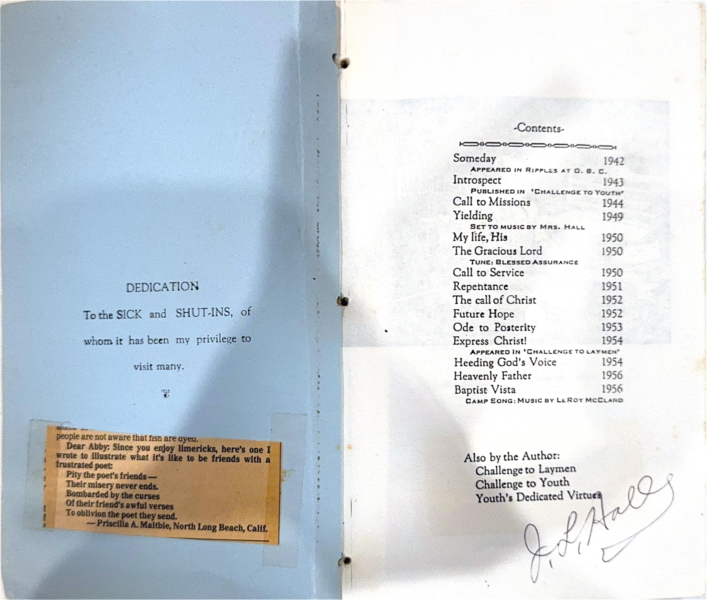
From the original manuscripts
1951
—
I now repent, for this I must,
The world and gain refuse.
I turn from shaded darkened lust
And worldly treasures lose.
Except YE turn from sin and death,
Ye then shall perish all.
Resist, forsake the ways of him
Who causes men to fall.
If you are troubled, torn and hurt,
Then turn about today--
You'll joy find, with peace sublime
Within the Saviour's way.
You can change, you must turn, re-
pentance...
Will make your whole life over.
To Jesus, take Jesus, trust Jesus;
Who saves and keeps forever.
1952
—
There comes a strangely moving call
One hovers near, I must not fear,
Ah yes, it's Christ--I do recall,
He's speaking now, hush, let me hear
It seems so good to have him by
He is so kind I do not mind;
Just when I find I've gone awry
He stops me, speaks, He does not
bind.
I hear and feel and know 'tis He
Who came and died, the whole
world sighed
And I sighed too, for now I see
As Lord untried, he is denied,
We must follow that call if we're
saved today,
So help us dear Jesus to follow thy
way.
I know that I shall never see
The fullness of Eternity
While here on Earth.
There goes with every passing year
Life wasted, bringing sorrow's tear
With spiritual death.
Keep pressing on, the final page
Brings happiness; entreat old age
With joyous mirth.
Hereafter we have much in store
Time fades before an open door,
What untold worth!
For to the fading, listless end
We gain our Victory's dividend...
Perpetual rebirth!
1953
—
Is is good or is it bad,
To be happy, to be sad?
Who can judge good from evil--
Friend from foe--saint from devil?
All this joust and hol'balloo
Tempest times we're passing through
Way off balance, all off key
Confused, distorted misery.
Where to turn...who can answer,
Scholar, Merchant, Lawyer, Dancer?
The Church asleep; Divines turned
'pro'?
Seclusion's corner? Picture show?
Futile, empty, vain expression,
Dire defeat, sure depression,
Pessimism personified.
You take over...I'm tired...I've tried!
I live again...the answer's there!
Self-death gives Life; with others
share.
God lives, Christ reigns, throw off
these chains.
Faith conquers all, and heaven gains.

From the original manuscripts
1954
—
I realize the power lies
Within the EYES of expression!
Cast off notes to departing doats;
Memorize my notes for expression!
Intensity as a part of me
Shows sincerity in expression!
Fervor, too will reckon you
As one true blue through expression!
Don't minimize, but capitalize;
The highest prize is expression!
Whene'er depressed to him confess
Your lack of stress on expression!
Tell it clear, the Story dear
That all may hear through expres-
sion!
To enunciate and communicate,
Intently wait on expression!
In all you do just think this through,
Your style renew...Use expression!
God, help me to surrender all,
To follow at thy beck and call,
To wear the yoke with yielded will;
I come to thee in quiet still.
Whate'er thy call, my all in all
I bring, as on my knees I fall,
To follow, do, or go or stay,
I'm ready now, I want Thy way.
As sinner Lord, I now repent,
My heart is changed, my life is bent,
Thy peace I want, I enter in,
No longer shall I live in sin.
Take me Lord, a troubled soul,
Thy love can make my spirit whole;
Redeem me from a wasted life
And lift me from all sinful strife.
As Baptist Lord, I here reside,
But now have left thy bleeding side:
Brought household goods upon the
trip
So now should move church mem-
bership.
If I enlist, that gives to me
A full responsibility,
And this I need to walk with God
And share the road my Saviour trod.
1956
—
FAITH
I thought again on God today,
But who He is I cannot say;
I find myself to be quite blind
When searching for him in my mind.
HOPE
With earnest choice, determined will
I could not help but seek him still
I long to feel his strong embrace
I yield unto his sovereign grace.
LOVE
My heart reached out in solitude
And there in deepest gratitude
I sensed his presence, felt his smile
Filled with his power all the while.
When I come to the mountains and
campground,
When I think of the fellowship
sweet,
Then I join in the playing and singing
Baptist Vista, our Christian retreat.
How I love to see friends and com-
panions,
How I long to be more like my King
How I like to be part of each service
Baptist Vista, it's of thee we sing.
From the day we all gather together
Till we all say the last of farewells,
I shall always remember our camp-
ground,
The people, the mountains, the bells
Baptist Vista a place for refreshing,
Baptist Vista grows sweeter each day
Baptist Vista is where I meet Jesus
And He is the true living way.
1957
—
Over the years I have felt the urge
in moments of reflection, to 'poem-
ize'. Everyone must feel this way
occasionally.
This compilation has collected in
my files, and represents a variety of
subjects and moods.
As your thoughts shall share
moments with my thoughts, may
your life be strengthened.
J. Leland Hall Clarksville, Ark.
1957
(Awareness)
The silence of God roars in my soul,
Anxious and desperate, I would be whole;
I looked for new Hope, Peace and Delight,
Help me to safety, pity my plight!
(Conviction)
Will the night pass, must I grope on,
Is there a victory in God's Son?
I am a culprit, victim of sin,
Helpless, distorted, broken within.
(Repentance)
Deal with my soul, plead with my spirit,
Eternal Life I never can merit;
Save me dear Christ, I offer my life,
Forgive my sins and long-wicked strife.
(Release)
Thanks be to God who hears even me,
Victory is mine, now I can see!
Yes, from today Jesus is mine,
..as the stars forever will shine.
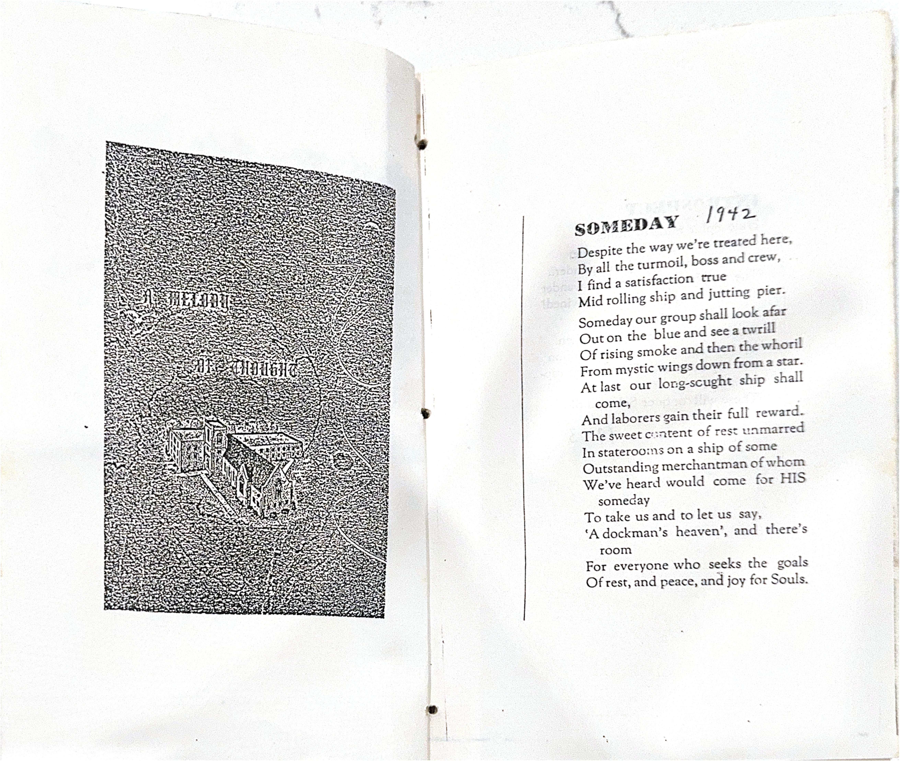
From the original manuscripts
1958
—
Speak to me, Lord, withhold not Thy voice,
Let the gates be opened, and declare Thy will
Today, let me hear the instruction of Thy
Declarations!
Be lenient with thine erring servant, Help me
To know, to understand, and follow Thy leading,
Then shall the lost be saved and Thy Spirit
Activated through me. Use me, Lord, in Thine
Own way, Today, forever do I desire some
Fellowship with you, this must I do.
Let me put off the weight and cares of un-
concern.
Reveal the feeling of Thy loving heart,
The mystic magnetism of Thy spoken Word,
And the indwelling power of Thy Holy Spirit
A room full of junk, (everything but a trunk),
And a disheveled cluttered-up desk;
Is the thing I face when I sit me down,
It appears to my wife...all grotesque!
I like my room, that's seldom seen a broom,
And the interesting things there on my desk;
I can think, I can write, I can study and plan;
Yes, this makes my workroom picturesque!
So the door stays closed, and I'm not so disposed
To invite in friends or other guests;
Only I understand how my work can get done
In an unkempt room with junky desk!
When I see a clean Study,(not the crude nor cruddy)
And I stand there before a cleared-up desk,
It gives me hopes and dreams, of much better things,
But my own can never be...Romanesque!
J. L. Hall
1959
—
Troubled Conscience? Black Accuser...
Deeds of night, brain abuser!
Tangled threads, jumbled thinking;
Erstwhile Villian: slowly sinking!
Easy Conscience? Not a loser,
Daylight sparkles, Mind amuser,
Straightened Soul, no more jumble,
Oh so happy, cannot grumble.
J. L. Hall
1960
—
I'll tell you a tale of Hoi Palloi.
He looks like a man, but acts like a boy.
I face him each day, and what do you think,
His actions are dubious, he'll drive you to drink.
He's up in the mornings, all anxious to go:
By mid-afternoon, his pace is quite slow.
Intentions? He has them, and all for the good,
Yet, do them?...he just never gets in the mood.
He sounds most mature, big impression is made:
The words and ideas are oft empty when weighed.
Impressions at first of this jolly fine fellow
Fizzle and drizzle, becoming quite mellow.
I feel for poor Hoi, and pity his plight.
For in trust so much, as the rest of us might:
I suppose it is true that every grown man
Is an oversized boy doing all that he can
To seem big and important in the eyes of men
Not knowing that pride is the root of all Sin.
Still, Hoi hopes to grow up and stay off of the
shelf
Because, you see, to be honest, I've pictured myself!
J. L. Hall
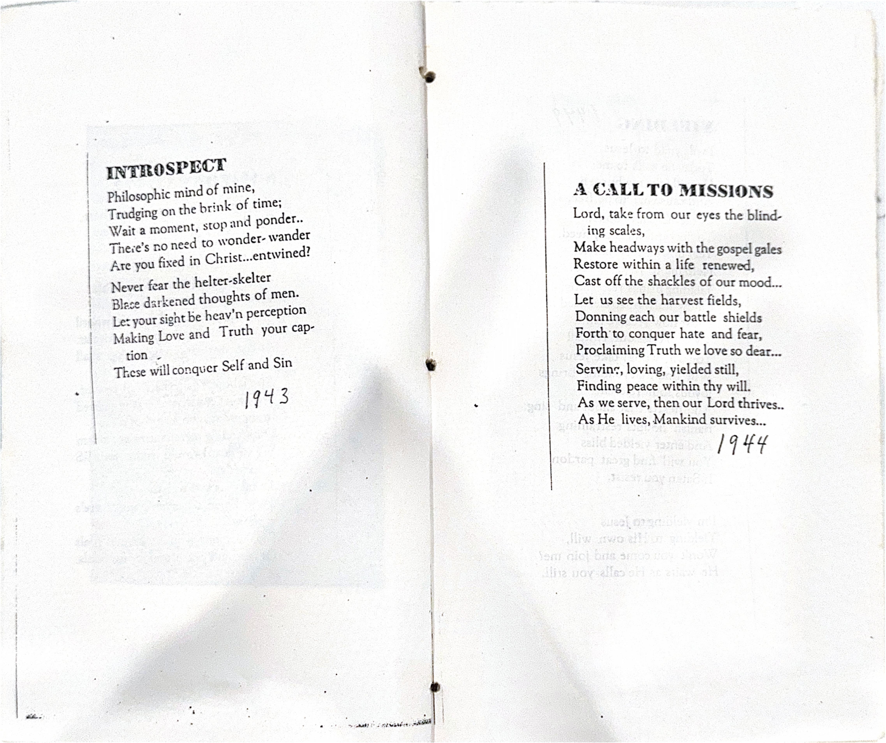
From the original manuscripts
1961
—
Oh God, our Heavenly Father.
As we enter Thy Sanctuary and this service.
May it glorify Thee, and Thy Son, Jesus Christ.
We are needy souls, congregated here hungry
and seeking.
Let our sins be forsaken and forgiven
of Thee. Help us this day.
We pray for Satan's defeat here as we survey
the issues of life and of our own hearts.
Show us Thy way.
Let Thy Spirit move within us, and guide us
into deeper Truth.
May we be clean that Christ may be at home
in our hearts.
Bless Thou the Sermon. Let it be Thy Holy
Word of Life.
May the Scriptures be unfolded simply, that
our Souls may see, and be reflected
therein.
Bless, now Thy servant, that his thoughts may
be Thy thoughts, his words Thine.
Make him an instrument of Thy power, and may
Saints be edified, sinners be convicted
of sin, and the blessed Saviour be
completely accepted and received in
every heart
For His Sake.
Amen.
J. L. Hall
1962
—
I delight, as well I might
In making words my amusement;
Yet I have heard, that by my words
Someday I shall come into judgment!
It's fun to think, and run the rink
Of ideas all to my pleasure;
Still, with my mind, I'm apt to find
Soundness leads to full-measure.
The biggest thrill of all is still
To delve within one's spirit:
For what we are, can mend or mar,
And gain or lose God's merit.
The greatest joy for girl and boy,
Or youth or grown-up, musing,
Is a worthy goal, with strength untold
To carry out God's choosing!
J. L. Hall
No matter what my lot shall be,
I've written verses with much glee,
That I shall be contented ever,
Just to be read...not just to be clever.
A line that causes thoughts to flow
Or makes sad faces turn and glow,
This is all I hope, you see...
Sometimes the product, pleasantly,
If there is more I hope to gain,
My thoughts live on, in calm refrain.
J. L. Hall
Now everything is quiet.
The day ends peacefully.
Each day passes
And will not return again.
Memories carry us back.
But the only value
Of memory is: Experience's
Rules for living tomorrow:
Then tomorrow's experiences
Should compound the value
Of recall.
Life is too short
Is the Cynic's retort.
Life is too long
Goes the sluggard's song.
Life is just right
Sez I with insight:
So I walk on my way
By God's powerful sway!
J. L. Hall
1963
—
Easy come and easy go,
There's no reason for despair,
We're living life has passed us by,
What's ours was always our share,
What I care!
When I simply do not know,
I just stick with the status-quo.
When I'm sure and know I'm right,
I don't dare to hide from sight.
But when I'm buffaloed, not sure,
I have never found the cure.
Help me, help me get off middle,
Else my life will be a piddle.
Can you know about this wavering?
It is far from being savoring.
A double-minded person loses;
A man of wisdom always chooses!
The fruit of our labors hardly bring joys,
For they are passed on to our girls and boys.
We find little pleasure in earning our pay
A sordid condition, such a derelict way!
But come now, we do! What I've said isn't true,
It's a pleasure to earn, to go so on to ensue
All the thrills of accomplishment, vict'ry,
and gain,
When we pass it all on, it's not any strain.
Easy come and easy go, all of life's a gift,
There's no reason for face being mift,
E're life has passed on, we must learn to
share,
What's ours was a blessing, and sharing is
care!
His greatest treasures were his kids,
They each had found a place
In the secret spot of his embrace;
They're not on sale for the highest bids.
His eldest came as Bette Lee
And patience she did try
To wear down thin, he wondered why;
T'was hard for them to agree.
Yet Bette Lee, a leader would be,
And a guide to her generation,
For all who'd see her rank and station
Would bow to her nobility.
And Almalene was fit for a queen,
She also had a temper,
But when you'd hear from her a whisper,
It would be heard, yet seldom seen.
Al loved the music of the spheres
And played to her heart's content,
When on a new project she was bent
She'd succeed to the shout of "three cheers".
Our Jim was a bundle of energy, too,
And an athlete right down the middle,
If he doesn't dwadle and lazily piddle
He'd come up with a trophy or two.
Jim wouldn't be defeated nor wholly depleated,
He was sure to make a good life;
While in the stormy stress and strife
He'd be there, as one who was needed.
Then Lydia fair, with the fine dark hair
Was a cute but subtle young teaser;
But you never could tell if this little breezer
Was going to be pouty, or share.
Lyd the kid was as sharp as a tack
And nobody better try best her,
For she, in the middle of stew and stir
Will advance to the front of the pack.
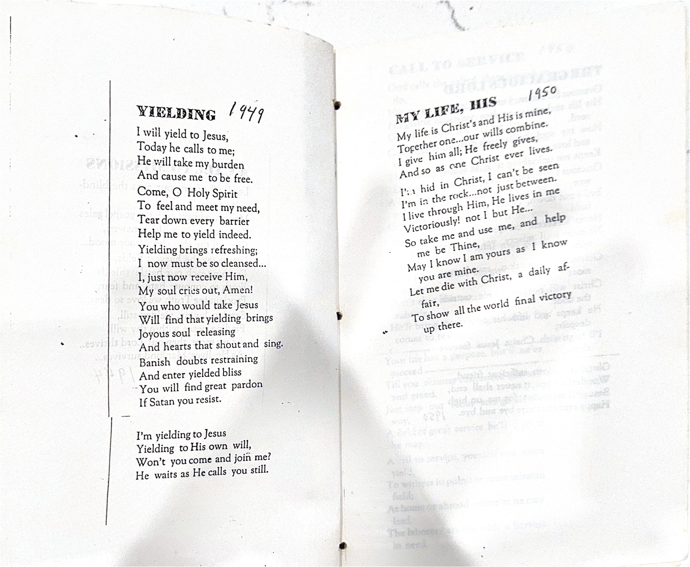
From the original manuscripts
1964
—
One thing I hate,
To procrastinate!
It keeps me behind
So I surely should mind.
Procrastination
Ruins life's station.
Beggars we'll be
Through Eternity!
Putting it off
Will make us soft,
So hear this call:
"Get on the ball!"
And many a soul
Will never be whole
Because delay
Brings sure dismay.
To make it terse...
Waiting hurts!
And souls can't win
By the "neglect" sin.
Put not yourself
On a future shelf:
Today's the time!...
So ends this rhyme.
J. L. Hall
1965
—
Remember many years ago
When on a concrete step
I kissed away my liberty;
You won my heart in depth?
And later in the Park, alone,
I said, "We'll married be?"
Ah, you accepted then my love
In perfect conscience free.
A year rolled by while I was gone,
Our letters daily flew,
And hours were helped by hearing many
Lines so sweet from you.
Our wedding day in May was set
At apple blossom time
In Arkadelphia's Baptist church;
I hardly had a dime.
I'd begged us wait, you blocked such fate,
Your faith was like sweet nectar.
You must have known the funds would come
From a Revival, held at Rector.
You glided down the lovely aisle
More lovely than all heaven;
We said "I do", and started then
A brood that's led to seven.
I do love you!
J. L. Hall
(Put to music by Norm Wakefield.)
Mother's work on earth has ended,
All her trials on earth are o'er,
She has gone to join her loved ones
On that bright and happy shore.
Now her troubles all are over
She will suffer no more pain,
She has left us, oh, so lonely,
Yet our loss is Heaven's gain.
Oh, we loved her, yes, we loved her,
Yet our Jesus loved her more:
Therefore he has sweetly called her
On to yonder shining shore.
What is home without a mother?
Many things this world may send...
To sadly lose our darling mother,
We have lost our dearest friend!
Jas. Holton: Bolivar
adapted by J. L. H.
1966
—
In every generation or so
Someone has a funeral for God.
You'd think they'd bury Him deep enough
He wouldn't keep pushing up sod.
A God so great as ours, you see,
Is always one and the same:
It seems we'd learn to say of Him,
"Hallowed by Thy name."
God cannot die, for He is Life!...
And Love and Truth and more!
For Him to lose omnipotence
Would be "hind things...before".
Almighty God just bears with us
As falls His pensive tear;
He's tried so hard to lift us up
O'er many a difficult year.
Still gracious loving suffering,
His injury rides on insult:
It brings to mind long days ago
When Calvary was His tumult.
God was dead...three days in all
In Christ, His life expired:
It was for us he gave himself,
Our ransom he desired.
And Christ arose, no one can fail
The evidence to see;
He lives and loves, and lifts mankind,
He e'en delivered me!
J. L. Hall
Time pushes me to end of day,
It is relentless pressure;
I find it always asks for pay
In e'er increasing measure.
When I stand up to preach a bit
Time gently stalks my musing,
It will someday drive me to fit,
It's certainly most confusing.
Much time, no one can really claim,
I guess it's past perception;
And since there's no one we can blame,
Let's go to a reception.
So on and on I'll rush apace
And use up every minute;
For life is time, and time's a race
With not a chance to win it.
When time becomes Eternity
And I'm there all a'revel,
I'll tell old Time to bide-a-wee,
Or go brood with the Devil.
Time's but a tool, made up by man,
A figment-imagination;
They say it flows away as sand,
Like flesh...disintegration!
J. L. Hall
I went to see: Curiosity
Got the best of me.
I saw it!
It's with my eyes I can visualize:
A hoped for Prize.
I desire it!
And now I've seen the less supreme:
It's not so keen.
I shun it.
There are many Goals and a few nice doles
With coveted roles.
I peruse them.
Yet as lasting Quest, only the best
Will meet my test:
I've settled it!
Though very slow, Toward the Prize I go
'Gainst the base and low.
I'll win it.
As a sharp-edged knife, the Lord of life
Cuts through the strife.
I love Him!
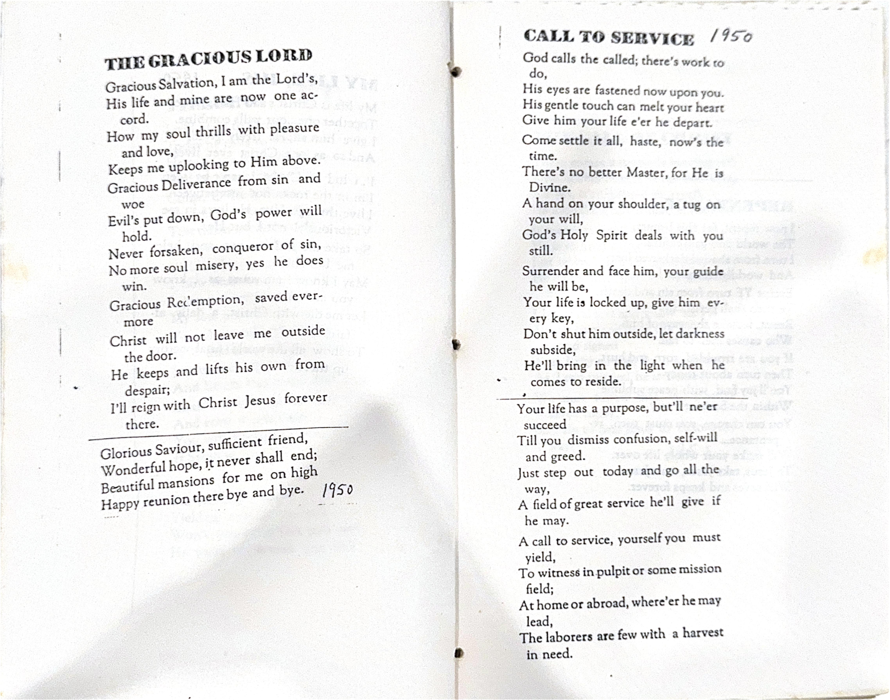
From the original manuscripts
1967
—
Through the lonely night I lie
Upon my bed, sometimes I sigh
Or think about the day just closed.
My thoughts were sharp before I dozed.
Yet in the night between the winks
Or in between, as conscious sinks.
I know that life moves on in stride.
Reality is hard to hide.
Another day is mine, in hope.
With God I need not grope or cope.
Each day is that which He has made.
I will rejoice, though memory fade.
The morning comes, ah all is new
Another day, with sparkled dew.
I'll tackle all the fearful host...
And stand up tall, with whispered boast.
With Him, I cannot be out-done.
On time, He joins me in the run.
I bravely face the day with Him.
To Him be praise! We conquer sin!
J. L. Hall '67
May the dust of my frame be appreciated
As the emotions of my breast are intoxicated
And the mind of my head is invigorated
At the thought of a life not exterminated.
For the Spirit of man is Eternal
His enduring Personality is Supernal.
There's escape from destruction Infernal
If I can mortify Self so Internal.
J. L. Hall
The years we have served you are five.
We're glad we're all still alive.
As we start year number six.
Maid much politics
We'll contrive and revive and survive!
The clouds pass by in their purity.
The deep sky blue is a mystery.
The space far beyond, so soliloquy.
And I, here below, just an entity.
1968
—
How much of Him there yet remained
In what He touched and what He named,
Of the days and of the hours
In His books and in His flowers.
In everything you see and feel
His presence lingers and it heals:
What influence, as He lead so many,
His power blesses more than any.
He is here, for he's not away,
He's living in the eternal today,
So invite Him in immediately
And live your days successfully.
J. L. Hall
Infringement upon my private time
Is the practice of Drones who love intrusion
And cannot see why a fellow-traveler's day
Is not open to the view and sound of everyone.
After all, is it not the right of one and all
To alter circumstances of peaceful neighbors?
In this quiet bower, all goes well
Until the distant soound of mower
Offers a rumble to mingle with the steady
Ticking of the clock on paneled wall,
Shattering the properly assembled pattern of reverie
Into the shambles of frayed nerves and throbbing head.
After the boistrous interference from out the window
Subsides once again, into sleepy floating pondering
Thoughts scattered, they reassemble into their proper
Ranks, and the proponent of ideas can stand
Attention to again await the inspiration of poetic
Skirmish until muse and inner flash of rythmic
Light appears.
Thus has been my day.
J. L. Hall
God is Love, and Love is the Truth,
And Christ is the Way of both:
To understand these well-worn words
Is to be to God, betroth!
What shame t'will be in Eternity
To know, as I've looked for other
That all along, I exhausted searched
Unaware God abides in my brother.
And Heaven to me can only be
As I find on the threshold of sorrow,
A tired soul, undone, unwhole,
I can show him the Hope for tomorrow.
J. L. Hall
How much of Him there yet remained
In what He touched and what He named
Of the days and of the hours
In His books and in His flowers.
In everything you see and feel,
His presence lingers, and it heals:
His power blesses more than any,
What influence, as He led so many.
He is here! for He's not away
He lives in the vast Always Today!
So invite Him in immediately
And live your days successfully.
J. L. Hall
1969
—
Dear Lord, I'd like to pray,
I don't know what to say;
I'm grateful for each day,
I'm with you 'long the way.
I must confess my sin
Which I do again and again;
I know it's far too often,
It seems I cannot win.
I magnify your name,
You're always just the same,
In you there is no blame,
For me Christ Jesus came.
Your blessings I would ask
To help me do my task,
My deeds I will not mask,
In your glory I shall bask.
So hear me I implore,
I'll praise you evermore
Walking through each open door;
Let YOU, the world adore!
8/69 J. L. Hall
The zig-zag course on toward the goal
I've followed long through hot and cold:
And still I seek it.
There's one supreme objective there,
The searching land and sea and air:
But searching I've yet to probe it.
I feel within me sure and deep
A longing that could make me weep:
But seem to miss it.
We wish someone could clarify
And to our minds would satisfy:
The mystery of it.
It's ever just outside our reach,
That power beyond, we still beseech:
To envision it.
But wait, the knowledge we possess
With faith, alleviates the stress:
And we believe it.
Ah, who can probe the depth of God?
None here, on firmament or sod
Could e'er begin it.
A world of things, and the infinite
Can't mix, on this we concentrate
And enjoin it.
J. L. Hall
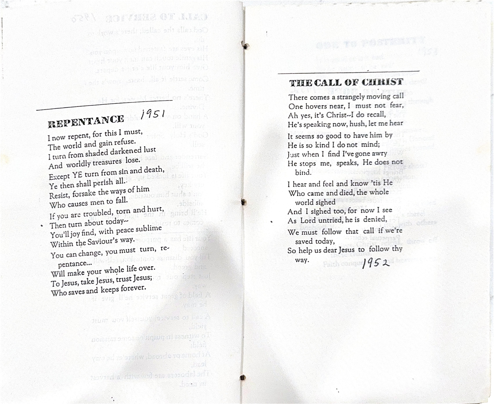
From the original manuscripts
1970
—
(Awareness)
The silence of God roars in my soul.
Anxious and desperate, I would be whole:
I look for new hope, peace and delight.
Help me to safety, pity my plight.
(Conviction)
Will the night pass, must I grope on.
Is there sure victory in God's Son?
I'm a culprit, victim of sin.
Helpless, distorted, broken within.
(Repentance)
Deal with my soul, plead with my spirit.
Eternal life I never can merit:
Save me dear Christ, I offer my life.
Forgive my sins and long wicked strife.
(Release)
Thanks be to God who hears even me.
Victory is mine! Now I can see!
Fun from today, Jesus is mine.
I, like the stars, forever will shine.
J. L. Hall
"Whose shoes
are those?"
Said Mr. Booze.
"I buy
that brand".
Said Mr. Guy.
"Oh no
you don't".
Said Mr. Blow.
"We see
they reach up
To one's knee".
"But see
their soles."
Said Mr. Key.
"Yes, they
have holes."
Said Mr. Kay.
"He meant
men's souls."
Said Mr. Trent.
"All souls
need fixed."
Said Mr. Bowles.
J. L. Hall
1971
—
I caught it in a snapshot,
I preserved it in a song,
I held it in a bit of verse
As time rolled on along.
Experiences are hard to keep,
Events elude the mind,
Impressions flee away so fast,
They're later hard to find.
The book-ones linger on awhile
Depending on who wrote it
The 'told-ones' no one can recall,
Much like the name of "Emmett".
So if you hold fond memory,
You'll have to drill and bear it;
"Association" helps one to retain....
On paper, you might tear it.
Best mem'ries are the ones that come
When all alone you dream;
But if your reverie's then disturbed,
You'll likely "up and scream".
To share a blest remembered thought
Brings varied-like reaction;
If He's included in the tale
'Twill all be satisfaction.
I heard the two golfers yelling, "Fore"
As I pushed wide open my back porch door;
There watching them drive well into the rough,
One muttered an oath, and the other, "That's
tough".
They scooted away in a guilded chair,
I mused as I lingered alone just there.
And thought of the games we grown-ups play
As we try to brighten our empty day.
We follow the pattern of childhood-bent,
We erect a mansion (as we did our tent),
Or we start a'working like everything,
Sometimes all a'bustle, we forget to sing.
We prattle and twitter and then cajole,
(It may be this happens on the 16th hole.)
But usually with determined bent to succeed,
We accomplish our goals, quite pleased, indeed.
Yet often, with oodles of things around,
Thinking our feet well anchored to ground,
We've forgotten the Book that tells the way,
So we forfeit our Game for that Coming Day.
J. L. Hall
What more Lord can I now do?
I commit everything, all unto you.
Knowing my limits (as you know too),
That I'm but dust, all through and through.
Empty, broken, and thoroughly spent,
Unable and meek and completely bent.
My spirit and garments before Thee "rent".
Please take my nothing, as I consent.
Rebuild my spirit like His who died,
And remake my will, (formerly denied).
"Instill in me the new man", I cried,
Leaving just Christ, revealed and tried.
J. L. Hall
O Soul, the past is caught away,
We cannot live in yesterday;
Nor often yearn for times-gone-by;
How pointless just to sit and sigh.
What value is there in past-living,
Sowing, moving, working, giving?
It now seems altogether vain:
Summer sunshine, winter rain.
Surely something lingers on,
Worthwhile values, writings, song?
Must the past thus fade away...
Must we live for just today?
Perhaps the answer lies in part
Of yesterday, (seen as "soil-heart"),
From which today's abiding Known
Came to us, as the past was sown.
And now our lives are fallow-ground,
Receiving seeds as days-go-round;
Then from these sproutings come fresh showers
And bright tomorrows now are ours.
It ties together...makes a whole,
We all fit in the "purpose" role.
And over all HIS hand unites!
While to this end, we set our sights.
J. L. Hall
As time moves on, each passing year
Gives chance to say "I love you dear".
And so I say it loud and clear,
And hope to prove it far and near.
Love's a funny little dart,
It's sorta like a lizard.
It twines itself around my heart
And nibbles at my gizzard.
And love is more than that, they say,
It's friendship, joy throughout the day;
It makes two pals and in this way,
Companions true, from May to May.
Love's best defined in themes on giving,
It's bundled up in sharing,
It's mostly seen in Godly living
And truly, truly caring.
So, whether mine for you is emotion,
Or friendlike fun, like a festive potion,
Or deepest daring downright devotion...
It's living, and dynamic motion.
Of all the poems writ by men,
Sure, dominates the theme of Love!
I say, repeat, again...again,
I love you Bet, my queen from above.
J. L. Hall
1972
—
"Lovest thou me," the Master asked;
"Am I first place in your heart?"
Yes Lord, I do...I want to so...
Be patient and do not depart.
"Lovest thou me", the Master wept;
"Can you not freely give in?"
Oh Master, I love you, truly I do.
I'm just overwhelmed by my sin.
"Lovest thou me", the Master implored;
"Surrender, obey my command".
I'm ready to yield, forsaking myself,
I love you with both heart and hand.
"Lovest thou me", again He inquired;
"Your commitment and trust I need."
I'm yours O Master, I humbly want
Your sheep and your lambs to feed.
"Go feed them, help them, and never forget
Whatever else others may do.
You're loving me most, when you love my own,
And urge them their lives to renew."
J. L. Hall
With Christ the way is joyous
Satisfactory indeed.
Though a life of toil, it gratifies
To help a world in need.
Without Him, life is fruitless,
It seems a drag all told;
Blunders and burdens destructive
For followers less than bold.
With Christ one has top billing,
Alone, we know our lack;
Victory comes in the struggle
As we walk the heavenly track.
With Christ I'll e'er be busy.
I'm adrift if cut from the vine.
I can do all things by his power
His Presence makes everything fine.
J. L. Hall
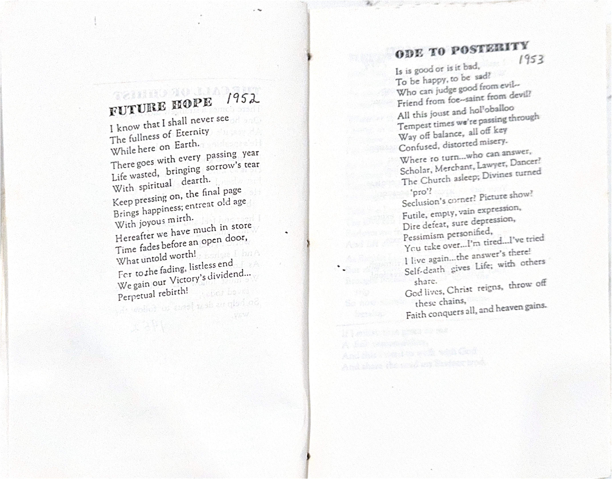
From the original manuscripts
1973
—
Another year, and we're still here,
But where we are seems a blot;
We think! We are in a hemisphere.
Yet who we are, we know not.
To know is to be, this truth we can see,
But where we are is not certain:
To be, is to live, and to live is a joy,
Yet someday, there comes down the curtain.
Be joyful and wait, this fact we will state
If still we know not our being,
Try serving another, the unfortunate brother,
This lifts us from darkness, to seeing.
So on we go, how far who can know,
It seems each day is a second,
We're not satisfied, hardly fit to be tied,
This may be worth something, we reckon.
E're night comes on with its dreary tone
There's lots to seek out and endeavor,
There's Heaven to find, and sweet peace sublime,
But never because we are clever.
The world awaits its Champion great
And is passing on from its loss;
Each man must choose the way he turns,
And inwardly, surely he knows.
J. L. Hall
The days move on
And I go too.
But the pair of us
Must divide into two.
The days pierce time,
Yet I abide;
But it's most difficult
To take in stride.
Upsetting and weird
This mixed-up life.
Tasty as honey,
Sharp as a knife.
I'm glad Time's only
A part of me;
I've yet much hope
Throughout Eternity.
All stakes driven down
Have vanished away.
But investments in Christ
Will forever stay.
Forward's the watchword,
Never look back;
It's what's up ahead
That can never be slack.
J. L. Hall
1976
—
When in the course of a busy day
As I am walking along my way
I stop and to myself I say,
"It's great to be alive!"
The sun is shining strong and bright
And beams steal through in radiant light
Till say it just because it's right,
"It's great to live in hope!"
I may be in my room alone
Or talking by long-distance phone
"It matters not...to stay or roam,
"It's great to trust in God."
So come what may or come what will
I'll go on laughing, singing still
And when they say he's "over the hill"
"It's great to have had these years"
If someone chance to remember me
They'll remember a life so full and free
And hopefully one of integrity
"It's great to have walked along".
And down the years in another day
As I think again along that way
I'll stop and tomyself I'll say,
"It's great, just to have lived!"
1980
—
My poems seem a sorry lot.
Talent, you guessed, "I ain't got".
But when I'm moody, tense or resting,
I like to give my thoughts a testing.
Today has been a "doozy" one,
I'd hoped that I could have some fun.
But in the fray, turmoil, and rounds,
I got quite tired amid the sounds.
So back into my sub-cranium...
(I might just think about geranium):
And start a flood, a tide, or flow
Of thoughts and words that go and go.
It matters not the subject matter:
I'm trying to clear away the clatter,
And in the quiet, hush and silence
I can, with ease, regain my balance.
One day when I was poemizing
And good thoughts all began arising...
Clash! boom! Bang! and Ding-a-ling!
Ruptured silence took to wing.
J. L. Hall
Children pass through many stages.
This is true throughout all ages.
First, the innocent babe so precious,
Long before old age can catch us.
There it lies on downy bedding
No'er so beautiful picture setting.
Tender, soft, and seldom absent
From the careful watch of parent.
Next, that growing pre-school age,
Little ones, like print on page
Take you near and far afield
As you ponder their next meal.
Then the brattish stage's a'makin'
Awkward ways and trouble takin'
Growing pains and self indulgence,
Much foolish talking they'll dispense.
Later on, as though by miracle
Metamorphized as by Encyclical,
Shaping to some full grown creature,
Desirable, pleasant, incredulous feature.
The circle ends, and then begins
Another trek, adulthood wins...
So bring again that marvellous round
Of innocent babe midst household sound.
J. L. Hall
The priceless ingredient
(Not being expedient)
Of life and the search for real meaning.
Is love without measure.
A true lasting pleasure
That makes all about us seem greening.
But I can't disallow this.
The affectionately warm kiss
Can grace the word "love" to an apex!
And all surely know it.
'Tis simple to show this
Without all the pages of index.
Ah, heed hidden dangers
Or loose-riding strangers.
They boss, then they run for the bushes.
No marvelous conclusion.
Their act's all illusion....
They leave you with nothing but "wooshes".
J. L. Hall
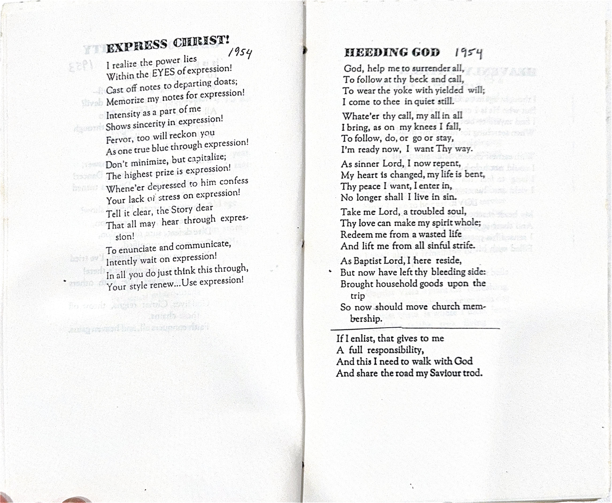
From the original manuscripts
1981
—
I saw it going "down the drain".
It's happened to me, time and again,
I spilled the juice upon the floor,
It splattered the carpet near the door.
A "mess" is always sad to see,
Riverlets or mountains of wasted debris;
It's like a life all out of tune,
As a shot in space, clear to the moon.
Mopping it up takes lots of time,
(Like derelict trying to quit his wine),
But when it's done, a difference makes;
'Tis better cured, so little it takes.
Or, wasted talent, time, or money,
Tangled thoughts are not so funny;
Cures are hard, solutions flee us,
Takes Oh so much, to really free us.
The answer to the scourge of life,
'Mid wickedness and sins so rife,
Is God's own Son, our Saviour dear,
He's able and just, and always near.
So give Him your life, what's left of it,
Let Him make do, as He sees fit,
All stains and trash He'll wash away,
And you will know a brand new day!
J. L. Hall
1982
—
Fantastic day it was to be
When to our house there came so free
Our family tree.
All plump and healthy, eyes so bright
Arrival came by day and night.
It was just right.
Our children brought their own along
And came on wings of mirth and song
And what a throng--
Bright Amy cozied up to talk
To Grandma 'bout her recent walk
And that's not all.
For Abby with Alyssa came
Recalling each their cousin's name.
T'was not a shame.
While Leigh Ann called to Jonathan
Who had his trimly holstered gun.
Intent on fun.
Young Micah wouldn't take back seat,
Hugs, kisses he would ask, repeat,
And think it neat.
Next, David big and strong and tall
With Adam came and said to all,
"He sure plays ball".
Then Angela with eyes so blue
Was looking 'round for someone new
And met a few.
Amanda-Wes made quite a pair,
They liked to mess up Matthew's hair.
He's one quite rare.
Where have all the children gone
Long time ago?
They have now all grown way up,
And that I know.
When will all the children come
And visit me?
They will come, but bigger be
We'll surely see.
What do all the children do
And find the time?
They can do so many things
As, make lines rhyme.
What are all the children so
Involved in doing?
Are they happy in their work
And tasks pursuing?
Who are with the children now
That we are aging?
They have friends and one another
Plus battles waging.
To whom will all the children pledge
Their best and being?
To Him whose trust and love abides!...
'Mongst selves, agreeing.
J. L. Hall
I know not what to do or say,
I'll only seek along the way
To find how underneath this fray,
I must go on from day to day.
Lord, here comes a Sunday,
What have I to give?
How then may I serve Thee?
How best should I live?
J. L. Hall
Among all of God's preachers
There's a man who stands tall,
And to us who have known him
He's Brother Andy Hall.
Some of our best preachers
Don't know where they've been
Brother Andy is different,
He was saved at age ten.
When completing his High School,
Went to college for more,
And just as a young man
"Preached the President's door.
When Dr. Grant saw him,
Knew he was no quirk,
Saying, "Education is yours
If you're willing to work."
Just like Jacob of old
He had worked all his life,
Now while getting educated
He would gain him a wife.
He completed his college
And all people could see
He was headed for Seminary
For his Doctor's degree.
"Doctor", his earned handle
We have oft failed to use
But I hope through this failure
He has not been abused.
Just plain "Andy", or "Brother"
Sounds very much better
He's no need to be "Doctor"
To share sunny weather.
So thanks to our Saviour
That our paths have crossed:
I've been helped many times
By Brother Andy's. "Lo Ross".
GNR 1982
(Adapted by JLH)
1984
—
"Where do I start, how can I know it?"
Mused the mind of the would-be-poet;
Ideas and subjects are many you see,
But inspiration, wit, are not always with me.
Typewriters are tools, and paper is needed,
In the suggestions well, I seeded.
A pencil can help get suggestions well seeded,
Then, time and "a mood", writing small bits of
To be shut down it helps, with a touch of bad weather.
The way to get started is to just jump right in
From beginning of script...I may see the end,
And the words fall in place, while the rhythm
comes along, or singing a song.
The syntax is crucial, like well flowing streams
It furnishes mood and conjours up dreams
Iambic, pentameter, couplets of verse,
I need the fine words, avoiding the worse.
So join me, I'm sure you can follow the theme,
And you find yourself caught, riding the beam.
If poems are made by strange folks like me,
I can grant you a favor, and read one from Thee.
J. L. Hall
(To Bette)
I see new sparkle in your personality,
It isn't passing shadow but reality,
I like the prospects and eventuality
Of deeper love, not based on triviality.
These days have brought us happy inspiration;
The hours have passed with utter facination;
I think we now have surer inclination
To find a better planned-for realization.
So let us hold these moments very dear,
and press on, without doubts or hurtful fear,
Then we shall always be so warmly near
Embracing precious memories year by year.
J. L. Hall
Another year has come and gone,
I did the best it could,
Yet for the life of me it lacked
In doing what it should.
It brought to me some woeful days
That caused me hurt and pain,
I surely hope that I can miss
Such barbs and hooks again.
Time moves and cannot be a friend
To all of us who age,
Seems better for the younger set
Than those just labeled, "Sage".
The labeling process puts a kink
In us who move along;
It tends to drive the spirit out
And takes away our song.
When is a person past his prime,
When should such one be through;
Is shelving for the other guy
And never meant for you?
If strength is there to meet each day
And embers to refire,
Why think of letting such one go,
Suggesting he retire?
Life does not have such nitches clear
For people to be "filed",
And categorized as "fit", or "done"
And priced, as cars are miled.
So let's rethink the processing
Of workers, friends, or captains;
They don't deserve an early shelf
Because their birthday happens.
What would I do without Jesus?
I've lived by his wonderful Word;
And all of the promises made me
I know how much they are worth.
He said He would be with me ever
And never allow me to go,
He said He would never forsake me
Because Jesus loves me so.
I see His face through the shadows,
The sky, the sea, and the foam;
He ever will walk with me gently,
'Til finally He calls me home.
I know He's walking on with me,
Until the whole day is done;
As long as my faith abides in Him,
He'll stay with me 'til setting sun.
Lavila E Crook, Rockledge
adapted by J Leland Hall
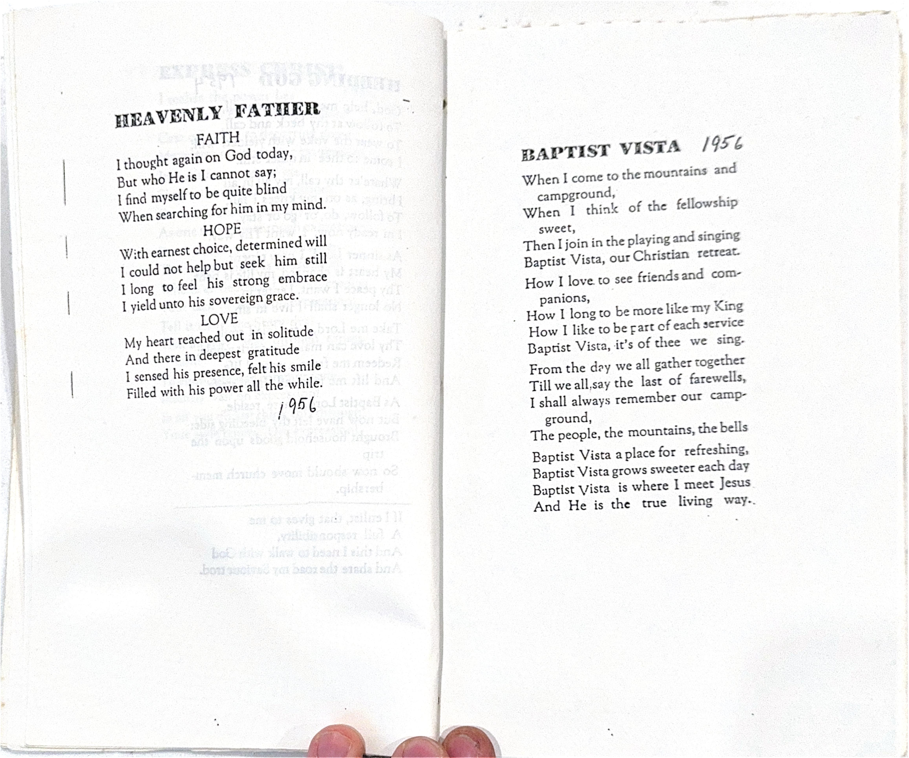
From the original manuscripts
1985
—
This day began as most the others,
Sun and clouds began to gather
To their places high above us
For another trip across our skies.
To the office was my journey,
I had cancelled out my tourney,
Work as always loaded before me
And I settled down to do my thing.
Little did I know the problems
Of the man who came and shared them
As he wept and sought direction
In his life torn by rejection.
Here he sought solutions proper
In the circle of God's hopper
Where the Word was giving solace
And instructions toward Salvation's Way.
Reaching out in firm attraction
To the peace of Light's refraction
He received his answers precious
To his soul, and so he went away.
Here's a day just like another
When the sun and clouds regather
To their places high above us,
But it was a special day of Miracle.
Lives are troubled all about us
In the mire and amongst the ruckus;
Still, occasions come to bless us
When we share the living Word of God.
Change is wrought, and comes new venture,
Cause freedom's light is not indenture,
But a new and high and holy blessing
To the ones who humbly come confessing.
J. L. Hall
Their pictures hang upon our wall,
And bring back joys we both recall;
Memories sweet and tranquil, too...
Aye, all those days seemed, Oh, so few.
Time-distance took them far away
From us, to strange and mystic fray;
Clear-cut were moments long ago,
But fuzzy thoughts now plague us so.
When through our door comes once again
In flesh and blood, grown boys, now men...
And ladies fair, so nobly poised;
No longer children---girls and boys...
But grown ups, just where we once were;
I glanced at him...then also...her,
And saw in them my life unfold;
And mother stood there to behold.
These are our children, lives unwasted,
They'll live their days with nought untasted
Of happiness and fulfillment:
We paused..learned much...in that moment.
Family times are happy times,
The clan comes o'er the miles,
We like the hours of fellowship
And play our games with smiles.
From Titusville there came the Goodes,
The Wakefields from the Valley,
From Iowa, the Moeller gang:
Our purpose--is for rally!
We met this time at Bolivar
With Jim and Dawn and theirs,
Some flew, some drove for many hours,
We mostly came in pairs.
We thought of Hal who couldn't come,
His work was scheduled rightly,
But others came to fill the void
And fun was with us nightly.
We ate, and played, and shopped and slept,
And fished and sang and talked;
The days went by at ghastly speed,
While kids swam--others walked.
We went to church on Sunday, too,
And saw a host of friends;
The City seemed as times gone by
And nought, were new type trends.
The time soon came to say Goodbye,
We packed, it broke our heart,
We ponder how we'll miss them so,
As one by one we part.
Next year will be another time
To try to get together,
We'll plan each one, to make the time
Come fair or stormy weather.
J. L. Hall
Old Age puts one in reverie,
It pricks the habits of memory
And tugs on strings of other days
Like past good times, picnics and plays.
Old age is like a dozing dog,
Who snips at flies, his mind in fog;
He hardly knows a person's near,
Strange sounds can raise both ears and fear.
Old age will sneak and creep on one,
Can take the joys that's found in fun,
But there are complimentary gifts...
One's hardly aware of tifts and rifts.
J. L. Hall
I said, "Let me walk in the town"
He said, "No, walk in the fields".
I said, "There's no excitement there."
He said, "No thrills, but will you yield?"
I said "But the way is bland,
There is nothing but farms and space".
But He wept as he sent me on,
"There is more", He said, "There is grace".
I said, "But the pace is slow
And my moods they'll surely bore"
He answered, "Yet people have hurts,
And souls there need you more".
I said, "I shall miss it here,
And friends will they miss me, they say."
He winced as He asked again,
"Am I to miss you, or they?"
I pleaded for time to be given,
He said, "Is it hard to decide?
It will not seem hard in Heaven
To have followed the steps of your Guide."
So, I set my face to the field
And cast one look at the town.
He said, "My child, do you yield,
Will you leave the city for a crown?"
Then into his hand went mine,
And into my heart came He,
And I saw a new Light Divine,
In the path I had feared to see.
...Adapted by J. L. Hall
I've lost the Glow
In wanting to know
All things, here and there.
Enough for me
To simply see
The Face of Jesus, fair.
So let me be
Just spiritually free--
All else is a dare!
Lord, thank you for the way
You've brought us to this day:
Never been a promise broken
In all you've ever spoken.
Help us on from this place.
May we trust your daily grace:
Keep us ever in your will
While we rejoice in all the thrill!
Now, it's time to take the plow.
I must rise and do it now.
Won't be easy this I know.
I shall sink as on I go.
Victory is ours, in sight:
Faith foretells our winning right!
God is good as He declares--
He can break and He repairs.
J. L. Hall
If you don't do it. It won't be done.
Just think how you've missed all of the fun,
For in Doing, we thrive, and come all alive,
This is no new thing 'neith the sun.
Much doing's like serving, it adds up to this,
For in serving others, there's little you miss.
Some serving is worship, (not giving a tip),
And giving with worship spares one the abyss.
If it is to be, God may leave it to me,
And this becomes responsibility.
So hasten and do...keep on 'til you're through,
And things you accomplish, multitudes shall see.
If anything happens, of good or of ill,
The ultimate doing comes under God's will,
He does as He wishes, both hits and the misses
Are in His permissive or action-like mill.
J. L. Hall
The hills have their rills of preachers,
And the valleys all have theirs, too.
But the one that shines, for all the times
Is the one who is just right for you.
The brooks have their books for fishes
The ponds also know the right bait.
When when preaching must fit, yes, each little bit
Takes the guy who can lay it on straight.
The fields will give yields in abundance,
The barns are o'erflowing with green;
Still the best of the lot is the man who has got
All the punch of a preaching machine.
The men fill again all the pulpits,
They deliver the best that they can,
The message is dear, and ever so clear
But the listeners dabble in sand.
'Tis time for this rhyme to subside,
The clock wins again in the race;
We crop off the truth, and take stance aloof
While the world now forfeits hope of God's grace.
J. L. Hall
I had my umpteenth funeral today
And I hardly knew just what to say.
The crowd was thin, no relatives there
But the sun was bright in the cemetery fair.
Yet a sadness was present as I led in prayer
I could only guess as I pushed back my hair,
(While breezes blew and birds on the wing
Fluttered about busily, and began to sing).
Was this man a Christian, did he know the Lord?
He had no family, his life might have been hard.
A friend tried to whisper, "He's a good man";
But who really knows if his heart was grand.
So there's many a life travels far beyond here,
And they go to their rest on the funeral bier,
Still you wonder about them, how will they fare
When they face God in Judgment, immediate up there?
We cannot judge, nor then would we try
A person's acceptance to God, bye and bye
Is based solely on Jesus, who plainly has said,
"I determine the destiny of the living and dead".
So I travel my journey, faith fixed in Him
Who washed me and cleansed me entirely of sin;
Yet I ponder, and wonder, and I'm often in grief
As I speak final words over strangers, deceased.
J. L. Hall
There are some people who are living so fast
They just will not pause to consider the past.
It seems all history to them is a bore.
But sad their lives, if the past is ignored.
Memorial Day is a good time to pause
And make it a season to consider a cause
That should speak of heritage, and those who fought,
Preserving our Freedoms, such sacrifice was wrought.
Too, there are those who labored and built
Up our land with learning and gave to the hilt
Of themselves and their skills so favorably deployed
With the blessings of country and home so enjoyed.
Finally, our gratitude could not be complete
Without all those truths, we today must repeat
Concerning the help our forebears have given
To help us have meaning in this age so driven.
You see, when we celebrate our golden inheritance,
We cannot but thank Him who grants us a stance
Of victory and blessings, and very much more
That humbles us, making us stand in the fore.
J. L. Hall
1986
—
Prayer, is where you're there,
And God, comes down to soul
To meet you in the street,
And put wings to your feet.
Too often prayer seems where
God only gives a nod;
And we can only be
Bereft of any glee.
I'll turn to Him, and then
I know He'll always show
His will, and I'll be still,
Awaiting personal thrill.
To pray amidst the fray,
And counter all the banter
Of talk and worldly walk
Can make us sometimes, balk.
To pray, can powerfully sway
By enhances of circumstances--
So pray and let all say
God hears, we want His way.
J. L. Hall
I had a thought, but it's long gone,
So swiftly fled away--
I doubt that great and glorious one
Will come again my way.
I had a dream, but it too passed
E're I could see the light;
I doubt that subtle faint repast
Will haunt my sleep tonight.
I had a hope all wrapped in grace
Eternal, good, inspiring!
My hope was dashed by Doubter's mace;
Still yet, I dream untiring.
I had a friend who walked with me,
My friend was not discouraged;
New hope my friend instilled in me--
My thoughts and dreams encouraged!
Davy took his rope and stick
From the shelf that held his toys,
Then he called his dog named Rick
So as to join the other boys.
School was out, and Summer fun
Caught his fancy, freedom called
To the woods past fields he'd bounded
Passing fenced up cows that bawled.
Time was precious in the evenings,
Fast the sun would pace his flight
Toward the shadows to the dusky,
No spare moments in the light.
Fellows met at Braddocks park,
Oft they'd played in this old field
Boundaried by the forest sentinels
Lifting verdant tangled shield.
Past the park, and down the slope
Over graveled paths and ditches
To the place known as the "cliff"
Came the boys to view the nitches.
Caves were dug to lift the fancy
Of the youths whose minds were set
On the vision of the legends
Learned at school with no regret.
Knights and soldiers, knaves in action,
With the cowboys—pirates tall,
Or a moment's glimpse of horses
In stampede from farm and stall.
Off would run the boys, all eager
Down the paths that skirted rill;
Danger made the play more boistrous,
Shouts of "Onward"; "Mount the hill!"
Imagination and discovery
Helped to open minds aspire,
Such elation of the action
Could not douse their spirit's fire.
What do you do when you're 60 and retired?
I really don't know, since I'm 35 and hired;
But I'm willing to guess, since I know my folks well.
There's time to look back, and enjoy memories spell.
So, since it's Christmas, and I do want to give
But as you know, Seminary's "where we live".
What shall I give to my folks I love so?
What about 35 years of memories, my gift to bestow.
Select a memory each day, for a month makes it longer
My guess, Mother won't wait, her will is not stronger.
Maybe you'll read them all at once, that's just fine.
Please know, that for me, they're worth more than
dime.
Quite frankly, I'm very, very pleased to report
I only "boo-hooed" and bawled very short;
I spent more time praising the ONE
Who chose me to come and live with you for fun.
And for discipline, correction, acceptance, and Love.
So when I'm over 60, I'll ever thank Him, up above!
Alma Wakefield
(Adapted by JLH)
Sitting, watching Time go by,
The clock runs on, yet man will die,
And when the clock can run no more
I'll be alive on yonder shore!
The paradox of death and life
(And where WE fit amongst the strife)
Is far beyond all human reasons;
We move along like changing seasons.
But this we see as time runs out,
Comes sound of trumpet, gleeful shout
And victory is ours who know
That TIME is o'er, to Heaven go!
J. L. Hall
There's so few of the new things to do,
There's the worry of the right and the true;
But we live our days in frustration
Seeking answers to life's destination.
There's a time and a rhyme that is fine,
It can quiet this old heart of mine
To return me to bold observations
Of my present and future relations.
So now, with a bow, I'd allow
It's about time I looked at the How;
And get on with the job set out for me
To fulfill the great task with all glee.
J. L. Hall
1987
—
When I would poetize,
I only fossilize;
I cannot keep my eyes
All wide awake.
I search for rhyming words.
They flee, as dashing birds
And having thoughts interred
Does not a poet make!
So, to the musing stance,
I pause to cast a glance
At things as strange as "France",
Or "tree", or "car", or "rake"?
J. L. Hall
The way to row is with the flow,
No one will ever need to know;
I dare to speak, take off a week
As on your trip you go.
It's time to dream, and it will seem
to breach a wall, and unleash all,
Let arms relax, no dread can tax
Life's inner call, nor cause us fall.
J. L. Hall 1987
When the "I don't knows" get to me,
I have to kneel down to pray,
Then the "I know betters" are given me,
It's Love that shows me the way.
Sometimes the way grows dreary,
And I need a lot of help
It's then that I cease to be weary,
I must not gripe and yelp.
So I let the "don't knows" become arrows,
And the "know betters" lift me up high,
Then I am in harness for Someone,
Who points me to goals in the sky.
Come, let your failures be lifted,
And your doubts be all washed away,
In gladness your hopes will be mended,
You'll walk in a new living way!
With my wife gone, the house is quiet.
I have to shop, (but of't won't buy it).
My appetite is not so good--
My interest wanes on frozen food!
The days go slowly, like the crowd
In traffic jams, (horns blowing loud);
I catch a nap mid-afternoon
As night comes on, and then the moon.
Come meetings set for my attention,
Men gather-talk, as at Convention.
We fellowship around the table,
And check to see if all is stable.
Then back to my quiet domicile
Where is no sound of pet nor child;
Just programs offered on TV,
Or books to read--these capture me!
I do have matters I must rate,
Yet, nothing pressing, things can wait--
In solitude I muse and roam
Around my silent peaceful home.
But mostly, days are lonely things,
The postman comes, a letter brings.
Or yet, again, I hear the phone,
Good tidings bring, I no more moan.
She's there to say, "Hello, my Love";
It's like a voice from up above;
We chat a bit and share the news;
I'm glad she called to chase the blues!
J. Leland Hall
Birthdays come and go my dear,
And now we celebrate this year
As time keeps passing on its way...
I'd like to write a poem of YOUR Birthday!
God must have had a special plan
When with His Everlasting span
He brought together precious things
To make your Voice that sweetly sings.
Then with His gentle touch He formed
Your spirit bright, then, He adorned
Your hair so fair and downy soft,
Somehow He lifted you aloft!
Next, a twinkle from the Skies
He placed right in your laughing eyes;
And lips so sweet, He formed your smile...
Your friends to gladden, all the while.
He surely must have known your heart
That would become like His, of sort,
And then, He made you mine, indeed,
For He well knew my deepest need.
Now, I'm so glad that I can say
On this, your latest grand Birthday
That God's great Love, so pure and sweet
Had caused our souls one day, to meet.
So, Happy Birthday, Love of mine,
Let's go aside and talk and dine,
Then when we've settled down at night,
I'll snuggle up and kiss you right!
A kiss for every year we've known
To thank you for the love you've shown
And, just because you're YOU, I'll try
Always to thank our Lord on high.
Memory's gates were opened wide
And there we sat, side by side,
Holding back a tear or two
Reading lines that will abide.
Overhead a wild bird sings,
We had heard from Denham Springs,
Letters come, but Oh, so few,
Messages too, when phone oft rings.
Here had come a book of notes,
Melodic thoughts and several quotes,
Halfway through we knew just who
Had given this gift without our votes.
Enthralled were we as pages passed,
With every thought, some memory cast,
Nostalgia with our journey flew,
So much of joy we know will last.
So thank you for your knowing care,
We'll often turn and linger where
You made us sad and happy too
With memories bright you let us share.
(Written after a sweet letter from daughter)
J. L. Hall
There are times
There are times when things are right.
And there are times when things go wrong..
When things go right, I'm 'out of sight'.
When things go wrong, I need a song.
To keep things on their rightful track
And not let things get helter-skelter.
One tightens the rope--takes up the slack...
.. Puts threatened things well under shelter.
So watch out how you speak your words
Keep tongue in cheek, with mouth closed firm
Those loose spoke words are 'for the birds'.
And faction-actions spread like a germ.
Concern and optimism shared
The air, in gathering groups at table's ends.
The talk was mingled round the room
Of current trends toward dips and doom.
From some came caustic comment
Claiming times were hard and budgets shy;
But still the positive posture held on
Declaring news had come of better days by phone.
So goes the never ending conflab
Posing pictures both of night and light;
And sure as time is turned to future years,
Will always be the sayers of hope and horrid fears
J. L. Hall
Pains are always with us playing mournful tunes
An ache in heel or head can slowly turn
One's mind from soaring hopes and dreams
To awful dreadful moans, and e'en to screams.
The squeamish soul will worry all the night
'Bout images that scare and bind, with fright
Dreads and tensions causing inner fears
With actual pain that brings the soul to tears.
The Great Unknown becomes the greatest foe,
Yet knowing facts puts anxiety in tow;
So only when those trials fade away
Can sufferer truly see the light of day.
J. L. Hall
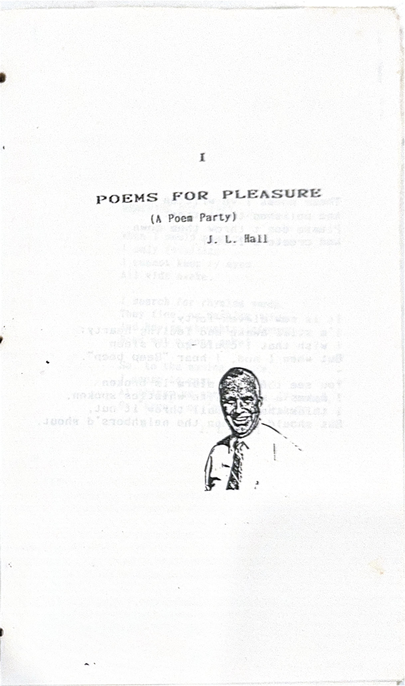
From the original manuscripts
1988
—
As a poet, with seeds I will sow it,
And many surely shall know it;
This story of LIFE!
As a garden, the bards and the warden
Vive generously and with sure ardour
Incredulous freedom so rife!
For service, in which is no malice,
We joyously lift up a chalice
Of merciful blessings so nice!
In the Book, which shouts from its nook,
His own, He never forsook,
How gently, to their delight!
So heed it, you always will need it,
To you He surely will deed it,
The Church.; Christ's bride and wife!
J. L. Hall
Just a poem a day
In a different sort of way,
Keeps the blues away,
And I enjoy it.
Thoughts are like money,
And taste like sweet honey,
Even sometimes are funny
And I think them.
Looking inward to gander
As the brain will meander,
Thinking things here and yonder,
Can I trap them?
As a would-be-like poet,
(Few will ever really know it)
Yet I just have to show it,
So I ponder...
J. L. Hall
Gone forever is the thought
Of a poem-fodder groat.
I can't recall impressive words
That fill, with speedy rate.
Ideas come at sundry times
Of things one does not choose:
I lose them e'er I amble home.
And so, mankind shall lose!
J. L. Hall
Lake Yale is such a lovely place,
Where one can always find grand space
And time to rest and meditate,
If seeking destiny or fate.
We love Lake Yale, a place to go
And quieten down a bit, and slow
The pounding of one's heart...
Can be the place of brand-new start.
The friends, the folk of common thought
Enclave to listen and be taught
Of matters high and noble need.
'Tis there we find JGod's planted seed.
No need to travel far afield
Discov'ring blessings those may yield,
When right close by, ah rare sublime
Inspiring sessions fill one's time.
Lake Yale will always mean to me
A place, a time to share and see;
All wonderful delightful stay,
A rendezvous along God's way.
We came, we met, we sang and prayed,
We heard the voices speak, and made
Our friendships strong with travelers there,
And shared with them God's message fair.
J. L. Hall 1988
It's birthday time again my dear.
There passes by another year.
Many we've known as you can see
We've enjoyed them all, just you and me.
This year was fine and full of glow.
We watched the seasons come and go.
As with the others through the years,
And like the others, mixed with fears.
We had full joy,
But for the most part ours has been
Days of pleasure, bound to win.
And times of useful service bright
That brought fulfilling cheer to light.
Your day of birth suggests to me
Our Father destined you to be
A blessing to the world about.
This stirs my heart to happy shout!
'Tis the time for speculation
On this day of dedication.
No more days of degradation
We shall start with trepidation'
Before I yield to desperation,
I'll turn in my resignation.
Wait, I know with expectation,
Things will change with exhortation.
We shall speak with excitation.
Family life can change our station.
It can change entire creation
Just because of DEDICATION!
J. L. Hall
Because you are so sweet, you see
You mean just everything to me.
And I just love you more and more,
You are the one that I adore.
When special days come, rain or shine,
For instance like this Valentine
I see you as the best of people,
You rise above the highest steeple.
A gift to you is not enough;
I cannot give just common stuff.
You are so great, so precious too,
There's never been the likes of you.
No Queen has lived, nor can compare;
Celebrity will never wear
The charm of life seen by your grace,
Nor can the sun beam like your face.
Can words, or hands, with stories tell
The lovely life you've lived so well?
Can poets, writers ever say
The things that tell about your way?
I'll simply have to do my best
To let you know you've passed my test...
I've never known of one so fine,
You're just my greatest Valentine.
This one seems ever so tiny,
Including its little "be-hiney".
So innocent and so charming,
We couldn't do anything harming.
The days were both rash and delightful,
At times a little bit frightful,
But happy and entertaining,
We've only an hour remaining.
Each child has its own disposition,
They seldom go into remission,
We see that they are most precocious,
As SUPERPRAGELLISTIC_EXPEALLIDOCIOUS!
But times show their other sideling
Which I'd rather forget, or be hideling,
When that lower lip is poked-out at me,
I could pull my hair with a shout-a-lee!
J. L. Hall
The days all run together.
We talk about the weather.
We sally on...
Our friends become remote.
Our chores are done by rote.
Sometimes by phone...
We try to think and plan.
Things tried, are oft "off-hand".
Then day is done....
These days are sometimes pleasant.
(We can't afford a Pheasant),
Nor hear some tones....
Still, we're a happy two-some.
Even find some time for "woo-some"
E're week in gone....
J. L. Hall
Thank you, Olive and Henry
For surprise birthday gift,
And your thoughtful nice words,
This gave us a lift.
We had come to your home
To pay honor so true,
With the many who showed
Their deep love for you two.
We're glad things went well
And the time, a delight,
And will always remember
Your gift, tasty sight!
In the throes of indecision
When the going seems so tough
And the pressures start to burden
In the narrows of the rough.
While the sand falls through the timer
And the whirlpool threatens you
If you sense a pain in promise
And the skies are darkened blue.
Take a moment for reflection;
You've been here oft times before.
Please don't weaken in the riptide;
Helpers will be on the shore.
Lifelines come in sundry manners;
Teams of lifters throng the place.
And a Higher Help awaits you
Coming from the throne of grace.
So today—tomorrow—ever—
Set your hopes on things unseen,
Past the browning of each autumn
Comes new life in springtime green.
Ten million poems of Mother's Day
Have come from pens, as others say
How much they love and think and feel
Within their hearts.
Still, I must add a thought or two
For Mothers in my life, so true
And sweet and gracious, quite a deal
These various sorts!
First, there was Mama, precious one
Who raised her brood, we had such fun;
She did her best, never missed a meal
Played numerous parts.
Then came my wife, a mother dear
To five, whose lives brought us so near
Together, and in family seal
Like symphony immortal!
Next, like my own, my wife's dear Mother,
Her presence strong like many another
Mom, so helpful with appeal,
Rich blessings to impart!
Too, mother all, my daughters are,
Their talents gain them rank as STAR!
And I have watched their stance and zeal
Refined to ARTS!
So Mothers, hear this little speech
And for it, please do not impeach
Me. Gratitude brings me to kneel
To God 'fore I depart.
Two days combine as "Parent's Day"
(This does not need good reason).
They come in May and early June.
Let's celebrate the Season!
Of fathers and of mothers dear,
So faithful did they give,
Love to mine tremendously,
They gave that I might live.
On Mother's day, I homage pay
And reminisce awhile.
Her lovely life still benefits
As did her timeless smile.
She still lives on in memory
And always will, I guess;
Her influence is as sweet perfume.
To this I must confess.
And Dad was one who never failed!
To be on hand when needed:
It took a while to know his care
Which now I have conceded.
He never raised his voice to me
Unless I strayed afar;
As child, I knew his helping hand,
He shines like yonder star.
So, Seasons come and go each year.
'Tis now I look to parent
Whose lives are more than memory:
Great blessings I inherit.
Mother's Day with Father's Day
Are good---I pause to treat
My precious Ones who did so much
To make my life complete.
I never had any training.
I never got a degree.
One day they came and related
"A Mother you're going to be."
So, where should I get started?
Really, this is just not my taste.
Til now, babies just seemed a bother.
But another? My time I can't waste.
Then, as my body grew bigger,
And life inside was to bloom.
I somehow came to conclude,
That this wasn't all doom or gloom.
So my heart begin to cherish
Each tiny kick I would feel.
'Twas then I began to realize
This one in me was quite real.
I wondered and pondered each day
And into the weeks that did come
What this little life would look like.
Would it be a daughter or son?
At last the big day arrived.
All the pain was certainly there.
But I knew I'd be a Mother.
God gave me the power to bear.
Before the good day was over,
Our hearts would all leap with joy:
For we learned the one we awaited
Was a precious small girl, not a boy!
And so, with my labor now over,
I thought the hard part was now done.
How little I knew what was coming.
Life-long mothering had only begun
Lydia Goode 12/88
We have walked many miles
And we've had many smiles,
Although through the years
There have been fears and tears;
But you gave me much courage
For each and every 'worriage.'
You are my best friend, my advisor, my
My pastor, my helper, and joy of our house
I love you, Bet.
5/88
In God's Eternal Day, there is no sorrow,
In God's Eternal Day, there are no tears;
In God's Eternal Day, a bright tomorrow--
This is our hope throughout these weary years.
In God's Eternal Peace, a glad reunion,
In God's Eternal Peace, we'll see and know,
In God's Eternal Peace, all heart-aches over,
This is our hop-e each day as on we go!
In God's Eternal Light, there is no darkness,
In God's Eternal Light, we'll die no more,
In God's Eternal Light, there is no sadness,
O glorious day of Joy on that fair shore!
In God's Eternal Rest, there is no sickness,
In God's Eternal Rest, there is no pain;
In God's Eternal Rest, we'll be like Jesus,
O blessed hope that we'll forever reign!
In God's Eternal Joy, we'll praise our Savior,
In God's Eternal Joy, we'll shout and sing;
In God's Eternal Joy the Angels join us,
To lift up Christ, and to Him homage bring.
In God's Eternal Glory, shout "Hosannah"!
In God's Eternal Glory Christians win!
In God's Eternal Glory join the chorus,
And all God's Children gladly say, "AMEN"!
Bob Randall & J. L. Hall
"Waiting" is the ghost of patience,
The one who waits is often victim
Of the petulant indecision of another,
Of course, the cause, is not dear Mother.
"Overcoming" is a victor of waiting,
The one who overcomes is often suave
And proud of his gracious behavior,
He'd pretend he is almost a savior.
The dullness of patience is waiting,
And the hours seem often so long
So we crown our patience with quietness
For this is becoming like politeness.
Oh cut it, you're an impatient prude,
Don't give us that stuff of such innocence,
Your actions are very improper,
Go throw your pride in the hopper.
Cause nothing you do can stop her!
J. L. Hall
Cold has come to our place.
I really can't enjoy it;
It seems to make its own case,
And who would dare despoil it?
The windows close in tightness
Against the bitter wind;
The trees respond with fright-ness.
They won't give up or bend.
I find my joy in reading.
The heat is soft and warm;
The hours pass til feeding,
The change will do no harm.
And so in life we wander
And so in leisure pause;
My mind can only ponder
What next shall be my cause.
J. L. Hall
From busy preparation
Of lecture papers long,
I turn to meditation
On higher thoughts, with song.
Melodic notes to lift up,
Flood through the soul's insight,
And brings repose unto us,
That matches rest of night.
But back to papers waiting,
I make my way for sure;
There's work ahead excruciating,
One cannot view demur.
Off to the task before me,
It will not stay or wait,
I must now pay the good fee,
And face my thrilling fate.
J. L. Hall
A walk with TIME today
Led me to have MY say
About this Bully:...
He stopped me fully!
TIME would not listen to me,
He showed me I'm not free
To dally with HIM,
T'would be like sin!
Old TIME is not forever;
"To cling", He'd grant me, NEVER:
He's to USE or ABUSE,
Rise, simply to LOSE!
My stroll with TIME will end,
He's only a part-time friend:
Hear ETERNITY drumming?
FOREVER is coming!
The people gather slowly.
The organ starts its peale
While voices twitter softly.
One cannot help but feel
Contentment and refreshing
Within the Soul, a blessing.
Then next, the songs are lifted.
The crowd now entered in.
The Preacher sits in silence
As Love and Spirit blend
Into a sweet communion
Of joyful Peace and Union.
(Harbor City Revival) J. L. Hall
The feeling of "let down" comes
When a job well done is o'er,
And the drain of the strain is felt
When the speaker can do no more.
But the moment of relief is sweet,
And the hurt of burden that goes,
When the rest for breath is taken
As every good speaker knows.
So bring on your armies of darkness
And give me a chance to speak
The good news of the views so dear,
Helping all to rise to their peak.
The feel of excitement comes
When a task is finished and won,
And the speaker feels meeker inside
As he thinks of the good he has done.
J. L. Hall '88
Through the air the message flies
With thoughts of the Kingdom of God,
No boundary stops the needed news
From Baha to Cape Cod.
The speaker shares good-news aloft
By way of the ether waves;
The hearer can ask with hungry heart
Learn how the Seeker behaves.
God is intent on telling all
The love He has for sinners.
The airwaves give encouragement,
Also, to Christian winners.
"Go tell" was Jesus' last command,
And many ways we do it:
Broadcasting fingers reach afar
To pierce Hell's gate, and through it.
I'm glad that there are those who give
To help keep truth a'flying.
The uttermost who need to hear
Might heed, and escape dying.
J. L. Hall
Just a view from the Harbor
Shows a sight of pure delight:
Christians gather in good spirit
Both at morning and at night.
This church is like a Lighthouse
Giving light throughout the night
For the weary woeful travelers
Who are searching for the right.
We now join in joyful worship.
We would fight with Sacred might
In the battle for great truth...
Lifting Christ to greater height!
With the Lord's Day finally over
Gone is fright, when comes twilight.
So we all can amble homeward,
Spirits touched with new insight.
Thus the church will stand forever!
Fades old rite, in doceful plight.
Now God's people will look upward
Toward the clouds so downy white.
I'm so glad that I am able
As God's Knight, to sit and write
Of a people once disparing...
Now in joy their souls unite.
J. L. Hall
There appears on every horizon
The clouds of thoughts so dismayed
The clouds are not those of derision.
But troubles from minds disarrayed.
The bitterness strikes at its opposite.
The foe is at once on his guard.
The two would seem misappropriate.
The petty feelings ever so hard.
In times when peace hides in shame
Can two not come to communion?
Why stir up the foam of dread blame
Why not find the grounds for reunion?
The need in today's consternation
When splits and daivisions are rife.
Is hearts that have felt true conversion
And are willing to put away strife.
This'll happen with inner repentance
And a humble contrition of spirit.
Let's let not our differences rend us.
Rather banish our hurts, and then bear it!
J. L. Hall
The world rushes on to conclusion.
We hope it avoids a collision.
Life styles have become a derision,
This circus will end in confusion.
Let's hope to avoid conflagration,
Riots move from nation to nation.
I've seen it in Cuban and Haitian,
We must take our stand at our station.
This goes, without rhyme or good reason,
It happens no matter the season.
Outbreaks hurt and cause us much lesion,
Some need to be tried for their treason.
J. L. Hall
1989
—
You were warned to turn aside,
This is just a waste of time
To read words sounding pointless
Just no more than making rhyme...
Reading poems should be healthy
Feeding brain or bringing smile,
But to simply read a couplet
May be futile all the while.
Words together dance and tumble
From the pens of slap and bard,
They may be a messy jumble
To be skimmed, and not too hard.
From the mind of sleepy writer
Races on the lines so "smart".
Senseless, crazy, without meaning,
While all syntax falls apart.
Never mind your concentration,
'Twas not meant to make good sense:
Just some time to waste and scribble
Verbs won't even fit their tense.
J. L. Hall
What do you say, let's call it a day,
We've come a long way, it's now time to stay.
At this point in time, (more important than rhyme)
Spending more than a dime is a must, if we shine.
On this planet a-spinning, where folks go
sinning
And I keep on a-penning in attempts toward winning
A victory of sorts, that blesses all hearts,
Like hard striking darts, and dismantling of carts,
Carrying loads in their season, to a destiny of reason
For Saints, not the heathen, nor troops who do
treason.
So, let's let it all go like boats straining in tow,
Or, like grains row on row in fields where men sow.
It's time to hang up, I'll give no one "Grupp"
And my brain interrupt like a friendly young pup.
Goodnight to all readers, you MUST be good deaders
And joyful young heeders who've read this heart
bleeders.
The night was hot and steamy.
I rolled and tossed a lot.
My sleep was largely dreamy.
Relaxing for me was not.
The dream went on unraveling.
I shuddered and then I turned.
It was a dream of traveling.
Along strange roads we churned.
Strange ones appeared upon the scene.
These figures should be feared
In daylight time, and act so mean
If quick their heads were reared.
Car tires went flat and bland.
A station-man with hat
Came up to lend a hand
And he was weird and fat.
He told the price of tires
And did not speak so nice.
Spilt oil caused near fires.
His counsel did suffice.
I then dug down for money.
It took a mighty round--
Repair-costs are not funny
When stuck in remote town.
What does it take to glorify God?
To serve Him, obey Him, and follow—
One ponders the ways of the Almighty Rod
And the meaning of full time devotion.
What can one do to exalt Him on high
And the call of our ultimate giving?
To sacrifice everything, even to die
In the harness of servanthood, fully?
The glory of God resides in His Being,
And we are not cause for its sharing.
Alone, He excells, and we do the seeing,
We're only reflectors of His brightest glowing.
So let us give glory to God, where it's due,
Our frailty permits us so little,
His glory is great, and we are so few,
We're made, just to praise Him forever!
J. L. Hall
You brought to me a Valentine,
A piece of cake so sweet,
Shaped in the form of loving heart,
I dearly loved your treat.
To me YOU are that Valentine
I'll evermore adore--
From times gone by, awhile ago
My memory runs before.
I'll ALWAYS be your Valentine,
The one who loves you ever;
Each year you sweeter grow, to me
Our hearts will never sever.
So, "Will you be my Valentine?
I'll be yours if you'll be mine,"
And everything will go just fine
'Cause you're my REAL Valentine".
Cherish you Dear, I always will,
Our hearts draw us together,
I pledge you once again my love
Come fair or stormy weather.
This anniversary will surely hold no sorrow,
It tells us how our days become tomorrow.
We have so much to bring unto today
That shows us God has walked along our way.
The years move on into the future bright,
And ours has been a highway, full and right
As on we journeyed to our distant goal
And found sweet treasures precious, yet untold.
Remember how each step, so gently laid
Brought us together, never dull or staid.
And we with happiness trudged forward still
Undaunted by hot valleys and long hill.
We learned that joy is in the daily hope
Within our hearts, not floundering to grope
Meaninglessly against harsh passing blinds
As one who fails, and never wins, or finds.
Now let us plan and pray that on ahead
We'll never let our dream vanish as dead;
We've had so much of beauty, life, and heaven,
It seems we've had a bright preview of heaven.
J. L. Hall
There she is, observing me,
Her big eyes all intent.
They follow me around my room:
This pose, was not so meant.
The wide brimmed hat, a perfect frame
On which to rest her curl
As ringlets fall on shoulders of
This charming little girl.
So life-like, yet so innocent,
Her gaze is brightly gleaming.
The tender thoughts of childhood days
Expressed in blissful dreaming.
She watches o'er my study chair
As silently as night.
Her lively features, frozen there--
A statuary sight!
An inspiration for old minds
And hope for all tomorrows:
I pray her life will happy be
By-passing griefs and sorrows.
J. L. Hall
Ever go to make a garage sale?
Ever look for bargains there?
You will find both male and female,
It can be joy if you dare.
Always go with pocket money,
Try to beat the early bird,
It will seem to you quite funny
What is "seen and what is heard".
Over in the corner hidden,
May be treasures long forgot,
If you snoop around unbidden
Finding values, or "what not".
Once upon a trek so casual
In the boondocks of our town
Was uncovered most unusual
Just the thing one wouldn't turn down.
It's the trash to treasure story
Just an old and dusty thing
But beneath all crusty gory
Was this item gold would bring.
Cast off camera, rusty rig,
Bought for just a paltry pence;
These when sold brought prices big,
Go thou likewise, hasten thence!
Time and patience, knowledge, too
Makes for fun and riches over;
Garage sales should not make you blue,
One might finish, high in clover.
Our friend has left us sad with pain
And we can feel but loss.
His leaving brings us hurt and sorrow,
We grieve and dread tomorrow.
Sometimes we wonder why 'tis so
That life should ever cease:
Of course we know there's more to come
When we arrive at Home.
But here and now our hearts are touched
With feelings unexplained:
We deeply sense the empty "now".
And ponder "why" and "how".
Someday we'll surely find a way
To cope, and bear our load:
Meanwhile, let's trust and meditate
God's love we'll demonstrate.
J. L. Hall
(Seib funeral)
Inexoribly
It cannot see
How the bubblebee
Can fly!
Unquestionably
There's nothing free,
Should they---or we
Ask why?
Internally
The Bad, with glee
Go on their spree---
Oh ey!
Unsoliciousiy
I'm so sorry;
I should not be
So shy.
Impossibly
I'm trying to be
Like old Harry's
Bright lie.
Intolerably
My old trick knee
Bumped a hard tree--
I cry.
Invariably
In spite of me
The days do flee
And die!
Unremittingly
I know 'tis he
Who'll pay the fee
And sigh.
Unwittingly
He lost the key
While on High Sea;
Some guy!
Ultimately
I'm sure that Ye
Shall drink my tea-
Bye bye.
This has been a day of sorts
That's brought to light most all my "warts",
And woes that do beset me so,
I'll be so glad to see it go...
It started with a cloudy sky
That robbed my spunk, I can't say why.
Then through the day came troubles more,
They left me bruised and very sore.
By noon I'd wished for better times
And sat to write some poems and rhymes,
The best that I could come upon
Was verse like this, (T'were better gone!)
Yet on this weary woeful day
At least I've chanced to have my say,
And lingering still, far down the line
Will be thoughts spoken, that were mine!
For good or ill, this short repast
Providentially will last and last,
Til someone in a distant day
Will read and say, "I'd rather play".
Just go ahead, if you're so led,
At least by poem, you've been fed,
And I have had my sweet revenge
By leading you on "Poetic Binge"! Ha!
Wait---You weren't cause for troubled day,
Yet you have said, "You'd rather play",
So my revenge's against myself---
My poems will end up on your shelf!
J. L. Hall
Infringement upon our private time
Is the practice of drones who love intrusion
And cannot see why a fellow-traveler's day
Is not open to the view and sound of everyone;
After all, is not it the right of one and all
To alter the circumstance of peaceful neighbor?
In my quiet study, all goes well
Until the distant sound of mower
Offers a rumble to mingle with the steady
Ticking of clock on painted wall,
Shattering the properly assembled pattern
of reverie
Into the shambles of frayed nerves and throb-
bing head.
After the boistrous interference from out
the window
Subsides, once again comes sleepy, floating,
pondering
Thoughts scattered, they reassemble into their
proper ranks
And the proponent of ideas can stand at
attention,
To again patiently await the inspiration of
poetic skirmish
Until Muse and inner-flash of rythmic light
appear.
Oh the grief of unwritten, forgotten verse
That must linger somewhere between the clouds
Of silent lack of expression and oblivion.
But, with the bravado of poetic inspiration
And return to reflection from dejection and
recess,
There will come hopefully another dream that
rises
To its point of explosion upon the mind
And cries for creation and the printed page.
There is a time midst the flying years
That bring us down to flowing tears;
A time to grieve o'er fears so real
And also to cry with plaintive appeal.
But there is a time to weep for joy
When news comes of no weakening alloy
That what was frightening, has now no fears.
The relief brings a rush of gladdening tears.
How good to feel at the close of day
That Someone else walked along your way
To brighten up all those cloudy skies
And put you on "go" for the upward rise.
God's given glory for every delight.
We praise Him for making day from the night:
He lifts us up from all dark dispair,
And gives us new songs that float on the air.
J. L. Hall
It makes not rhyme or reason
Using two, when one would do:
It's like fruit out of season
When the two, must ask each, "Who-?"
There's jobs that need not others
Just to do the work of one:
Some choke the task, my brothers,
And take away all fun.
Why stack the staff to limit
And to burden down the source:
The job is one of minute,
It needs not such big force.
Folks think the more, the better.
But numbers can deride.
And often, only fetter
As facts, they tend to hide.
There's times when all the helpers
Are needed, sure and bye:
But, then sometimes they're "yelpers"—
Many fingers in the pie.
9/89 J. L. Hall
The King Street saints are gentle souls,
They care for one another,
It's been a joy to work with them
Like Sister and like Brother.
We traveled many miles to serve,
And found them always ready
For five and thirty years, involved
In Kingdom work so steady.
The services were cheerful, bright,
And praise was offered freely
To God, whose Son was lifted up--
Exalted--Worshipped, really!
No problems crossed our way, to mar
The fellowship and reverence
Among the folks at King Street church;
We surely dreaded severence.
But we were only "filling in"
To help, and to encourage;
Those days were full of happiness,
They certainly "were no Dirge".
J. L. Hall
The church was sparsely seated,
The Revival all announced.
The room was quite well heated,
But the folks just didn't show.
The pastor stood up strongly
And bravely faced his flock.
Some members did him wrongly,
But worse, had let down God.
The music droned unwillingly,
The prayers all proper strong,
The seats bulged out unfittingly
And announcements ran too long.
And then the Evangelist started
And spoke the ways of God.
Truth came and seared and smarted,
He spoke of grace and love.
We people left and pondered
The message we had heard,
Not one had doubts, or wondered
If we had heard the Word.
J. L. Hall
Jessica's role in Bakker's flap.
Or Swaggart's fall. Oh sad mishap.
And Oral stubs his toe again.
The giants fail. because of sin.
There's not a one who stands so tall
But what the Tempter plots his fall.
And sad the day when preachers yield.
And worldlings claim. "they play the field."
The status of God's Kingdom. strong
Men cannot wreck by doing wrong:
God's character men may assail.
But Heaven's truth will never fail.
J. L. Hall
It's hard to bend a lie into fact,
The basis of Truth is revealed
Not found in a Theory-Experiments so frail,
Nor hypothesis pawned off as "Sealed"
The "Science-god" will let people down
It's virtues outweighed by its vices:
It won't hold water when based upon Brain
In spite of its devious devices.
O Scholar so poised with your mind firmly set,
Will you lead us at last to corruption?
Will your pride in your teaching never forget
persist 'Til the world burns in fiery disruption?
The struggle is now for the hopes of our future,
If there is one for mankind to know;
Science that would save us has proven so wrong
And has little on which it can go.
The good that we see coming out of the labs
Isn't something of a false Science-god
But the work of a few who did prayerfully seek
For the helps to meet needs on our Sod.
How better by far to live life in peace
And be careful in handling Ecology,
The God of Creation has his hand on affairs,
Find His plan of Salvation in Theology!
J. L. Hall
1990
—
I think that I have never seen
A fruit so fine as a tangerine.
It's tasty, delightful, and easy to eat,
It peels so nice, and tastes so sweet.
Days when I'm in need of a treat,
I peel me a bite, it's clean and neat.
A fruit that's truly fit for a Queen,
This delicious morsel, the Tangerine.
J. L. Hall
A tape is an instrument so refined,
It serves many purposes, some Divine;
It preserves the past, brings back to life
Both things of peace and those of strife.
I believe in tapes for very good reason,
Helps us remember the times and seasons,
A glimpse into days that are long gone by,
And may bring a tear, or even a sigh.
A tape is a strange and interesting thing,
People can talk, and some like to sing,
Then share the tape with various ones,
A tape goes far, as it runs and runs.
J. L. Hall
Down to the stream, on my "fantasy beam"
For an afternoon spent with some fishin',
I'll spit on my bait and drop it below
In the water, and I'll dream, with my wishin'.
I really don't care if the frisky things bite
'Cause I'm really there just for the musin'
I need such a time to catch up with myself,
Life sometimes can be so confusin'
A day's not a waste when I get all aside
To capture my thoughts and my sensin'
I'm glad to go fish, or do anything quiet;
I can tie up loose ends, start commencin'
Don't pity the one who enjoys a stroll
As he wanders or sits for his whittlin'
The greatest ideas for all human kind
From solitude comes, it's like riddlin'.
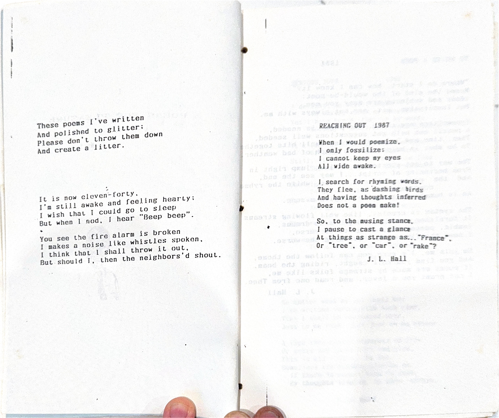
From the original manuscripts
1991
—
A'mong'st the bumps of growing older
Are the hurts of sad repine;
Stacking up as years roll bolder,
Down the trail of passing time.
Not enough that bodies aging
Through the toils and tufts and tears,
Onward to our place of saging,
Brings our spirits to arears
There are also times so trying
In the battle for a place
To be useful, before dying
In the struggles of life's race.
People can be so unthoughtful
Of the ones who ran before,
Not a pity for their purseful
In life's race of Evermore.
Why the disposition cruelly
To absent the ones who loved,
Cared and sacrificed so stately
In their day so nobly moved.
Let the record loudly notice
That the elders once were high
On the listing of the office,
Recognized.....an honored prize.
So, save a place in Halls of Honor
And a place for useful deed
For those aging passing armies;
They're the ones who met YOUR need.
.......Right on!
The Micco Saints received us warmly
Thirsting for a Word of Light,
Gladly came we to their family
Praying for a new day bright.
The church was ready for the Gospel,
And to lift their eyes with hope,
Joyfully we spread the table
Casting forth the "helping rope".
The days moved on into the seasons
Bringing scenes of pointed need,
Patiently we tried to serve them
Giving aid and sowing seed.
The services were all delightful,
Worshipping and singing all,
Eventually, we sensed a calmness,
Healing bliss; souls stood up tall.
The present brings a satisfaction,
Knowing God has been so good,
Wonderfully He answered prayers
Exactly as He said He would.
The future seems a brighter pathway
Filling souls with peace sublime;
May our friends at Micco prosper,
Knowing God redeems the time.
The clock moves on as Spirit prompts us,
Calling churches to His love,
Eventually we'll hear His voice
Calling us to Heaven above.
1992
—
Life at best is very brief.
It concludes as a falling leaf. (fades away)
When winds prevail and the air so cool
And making ripples on the pool
Life's pressing being To sound the Thief
This Takes my boat out To The reef,
The waters break against The rubles
Too feeling on with heat & Toole.
So fragile life needs best of care
And kindness for a life, Up There
As Heaven awaits in crashed souls
It's wise & good To get one's goals.
Some see life as a fighter, Won
Examined by many, Turn on Turn
It stands the years to age unspoken
But at my Time it would be broken
A life must press beyond the void
It's vision as a ebony table
Yet even stories drift onward
Here an end while the future
Which life continues, as all time -
So the goal am present, Name
I pressed, passing Than This world what helps on
Then way
Not many poems in ninety-two,
Just couldn't see my journey through,
Time was precious, fast it flew
It seemed I had so much to do.
Busy is the Interim's task,
What he does you needn't ask;
Three fine churches called on me...
Micco, Satellite, and Eau Gallie.
We travelled every day to serve
The people, and they had the nerve
To ask us come, and help and preach,
We liked that challenge: lead and teach.
The months rolled by, where did they go?
We made new friends, we loved them so,
We saw their joys and shared their pain;
The passing scenes---not seen again.
Some friends stand out--not e'er forgot,
We shared when summer days were hot;
Lives intertwined, then folks depart
To go their ways, it breaks one's heart.
But memory stays to bring friends back,
Much happiness there for us...no lack,
I'll reminence, and think of them,
So close to us were they, like kin.
Good friends will share our lives again
In sunshine days ahead, or rain,
The lasting part of life exists
In meeting new and old like this...
Somewhere down the length of time,
The bright spots cancell out the grime,
And people touching others, bloom
In golden thoughts...forbidding gloom.
The Lord is my Campground Keeper,
I shall not be without a Site.
He maketh me to lie down at night in peace;
He leadeth me over many happy trails,
He rejuvenates my R.V. rig.
He guideth me into opportunities of witness and se
For his Name's sake.
Yea, though I drive through rain and snow,
I shall fear no breakdowns
For Thou are with me.
Thy Presence comforts me where ever I go.
Thou prepareth a covered-dish meal before me
In the company of many lost campers;
My concern for them runneth over.
Surely, safety and God's love
Shall accompany me all my travel days,
And I shall rest in Shady Dell campground forever.
J. L. Hall 1992
A week without a job is weird,
With all the Boogies we had feared,
Of anxious days and sleepless nights
And many imaginary frights.
The Unemployed are all around
As situations proved unsound,
And folks are having second thoughts
Of stuff they have and things they bought.
A Debt is like a monstrous bear
It bites and clings and tends to tear,
There has to be a way to handle,
Or life caves in like an empty sandal.
Positions come and jobs may go
When all activities seem so slow,
And one is out of cash, and helpless
He knows that things cannot be selfless.
I wish that problems weren't so crummy
And people's needs could turn to...yummy,
But now reality takes its stand;
Recession brings no friendly hand.
If you are low, and cannot borrow,
Just give a thought to other's sorrow,
And know that you can beat bad weather
For curcumstance is bound to better.
Large sympathy is not enough,
It doesn't solve one's needs and stuff;
But nice it is to have a friend,
When one tries hard to clear up sin.
Go to the source of strength through prayer
And give your days to comfort rare
That comes from knowing you aren't bad
It's by your spirit...glad or sad
......That Changes happen in you!
God brings his miracles through!"
Fifty years have come and passed,
I lived them as a journey long,
Ordained to preach in forty-two,
My earlier task had been in song.
In schools, I pastored humble folk
They took me in to pastor them
From cities to the farms widespread,
I thundered sermons aimed at sin.
I led in meetings on my way,
Revivals helped augment my pay,
Both country-side and city-wide
I preached and sang, day after day.
From church to church, and field to field
I traveled with my faithful mate
We found the doors all opened wide,
We journeyed on from State to State.
The middle years were joyous toil,
We stayed the course toward larger work;
Our family grew, and joined our chores
The task was great, we did not shirk.
Where have the years so quietly gone,
Our sands of time are running out,
Our limits close, as on we go,
There's much to cheer, with booming shout!
When we have come to end of day,
And mourners ponder our demise,
It's good to know our work lives on,
And we, with Christ are set to rise.
We now look back (and then, look down),
Upon our journey swift and straight,
All years were happy, hopeful, good--
With no regrets---just Love, (not hate).
1995
—
At least one poem, once a year
I've put on paper straight and clear,
To put in concrete, words so pure
With Truths that linger and endure
Some poems can be like monuments,
Or Rockets from their base, well sent,
These thoughts from orbit soon reenter
To place our lives well back on center.
Some poems find their way to music
And singers deft can all well use it
A tune with poems, the message send
To all the world; some ideas bend.
Like all Ideas, some poems can prod
A person's conscience up toward God;
Or circumvent a Mind to Evil
Thus give the reins o'er to the Devil.
But mostly, Poems are made to bless
Or cause the Wayward to confess,
Thus lift the lonely souls to joy,
Or prod, or comfort, or annoy.
Tomorrow I'll write poetic lines,
I will not have to pull the blinds
My Mind across this century roams
Reminding scores of its laughs and moans.
Most any bloke can make lines rhyme
But no one just the same as mine;
I'll keep on writing verses cool
For poems like mine are made to fool.
For fun and pleasure, script so neat
Can lift the spirit, and beat the heat.
J. L. Hall 1995
At least one poem, once a year
I've put on paper straight and clear,
To put in concrete, words so pure
With Truths that linger and endure
Some poems can be like monuments,
Or Rockets from their base well sent
These thoughts from orbit soon reenter
To place our lives well back on center.
Some poems find their way to music
And singers deft can all well use it
A tune with poems, the message send
To all the world, some ideas bend.
Like all Ideas, some poems can prod
A person's conscience up toward God;
Or circumvent a Mind to Evil
Thus give the reins o'er to the Devil.
But mostly, Poems are made to bless
Or cause the Wayward to confess,
Thus lift the lonely souls to joy,
Or prod, or comfort, or annoy.
Tomorrow I'll write poetic lines,
I will not have to pull the blinds
My Mind across this century roams
Reminding scores of its laughs and moans.
Most any bloke can make lines rhyme
But no one just the same as mine;
I'll keep on writing verses cool
For poems like mine are made to fool.
For fun and pleasure, script so neat
Can lift the spirit, and beat the heat.
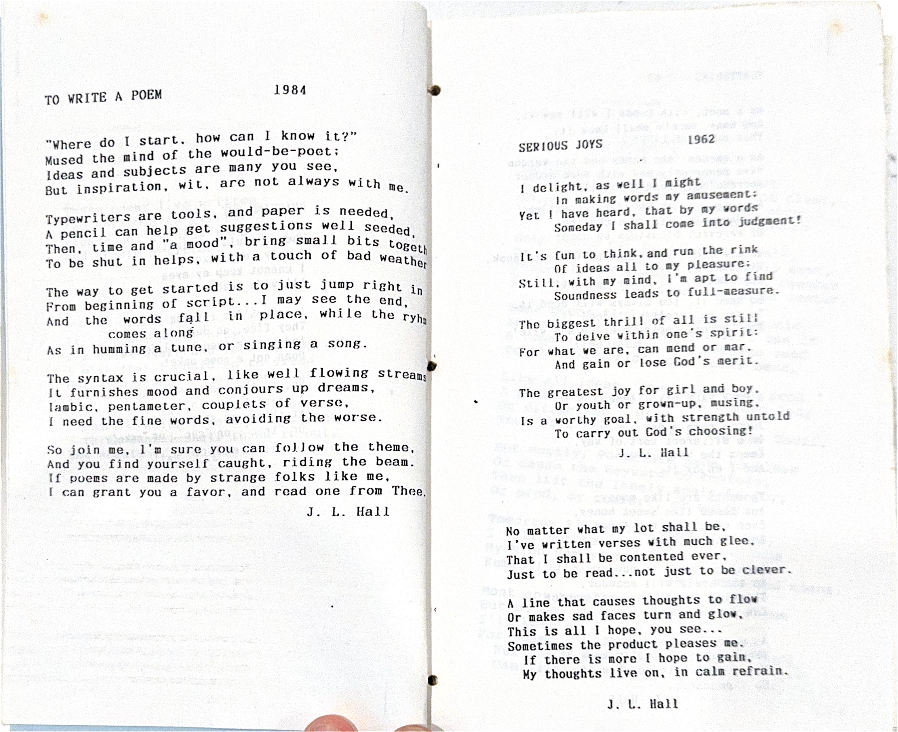
From the original manuscripts
Undated
—
These poems I've written
And polished to glitter;
Please don't throw them down
And create a litter.
It is now eleven-forty.
I'm still awake and feeling hearty;
I wish that I could go to sleep
But when I nod, I hear "Beep beep".
You see the fire alarm is broken,
It makes a noise like whistles spoken.
I think that I shall throw it out,
But should I, then the neighbors'd shout.
Notes in the night
Are often most bright
And come out alright
With uncanny insight.
E'en oft in my dreams
I note those strange scenes
That appear, as on screens
In clear color, it seems.
These thoughts I suggest
Aren't quarter and rest
As on staff, which suggest
Some hard music test.
Rather, notes from my pen
Written down, and again,
One hardly can win----
Only jot it, and grin.
J. L. Hall
Why do I sometimes get grouchy?
And do things I know I should not
And make the most untimely statements,
That bring only unsightly blot?
My selfishness will only hurt me,
My self-will is surely a smog,
When "my way" is untamely prattle,
I'm usually walking in fog.
Comes times when compromise hurts me,
And yielding just makes for self-burn
I must find solution...or shame me,
For always demanding "my turn".
Thank you, Lord, for another day.
Please help me along my way.
That, whether work or rest or play,
I shall let you have full sway.
Keep me Lord, from hurt and harm.
Guide my footsteps, hold my arm.
Calm my fears when comes alarm,
And tuck me under the covers warm.
Life has its many frustrations,
You never can plan for a thing,
The moment you think its together,
Organization goes out for a fling.
The best we can muster is fragile
The programs will all fall apart,
No matter the hot sweaty efforts,
Someone's out of place from the start.
So on we shall push to the limit
And hope things will fall into place;
If not, we shall keep our composure
And take it in stride and with grace.
But why, tell me why, the confusion
Of everything going bezerk?
All the planets go steadily onward
While I fizzle out like a jerk.
9/89 J. L. Hall
Rector is the first church
I've served that did not
provide expense money to:
State Convention (2nd/wrong
Southern Bapt. Convention)
Pavy Evangelistic clinic (3)
Does not remember pastor
on Birthday
Christmas
Then require pastor a
reasonable number of Revivals
& No Vacation.
The only church I thanked God
for moving me from as I left.
As we left Town, the funeral
was being held for one of the very
Landmarkish of Two doctors who
were known far and wide for
their wealth and Tyrany
Praise the Lord, for He is good,
His love is everlasting,
He gives the best unto his own
And calls for prayer and fasting.
Praise the Lord, for He is great,
His love is all eternal:
He wants to guide each one of us
By his own grace supernal.
Praise the Lord for He is pure,
His love is strong forever:
He seeks and saves and keeps his sheep,
And He will leave us never.
Praise the Lord for He is strong
His love is there unending,
He gives himself each day to us
With grace, our spirits mending.
So Praise, Exalt, and Lift His Name
To realms of glory heights,
We are so blest and favored here,
His cares are our delights!
J. L. Hall
Creativity days seem past,
The sun is setting fairly fast,
The soul within lives tired and worn,
The insight-spark just slightly torn.
Energy flees away with years
Along with sight and sense and ears:
The spirit sags, the flesh is weak,
Curiosity can no longer seek.
The will is torn all out of shape,
The toll of time defies remake,
So, we saunter down the trail
And life unfolds much like a tale.
Persistence calls and 'rouses vision
Loosing tangles of death's derision
To eye the portents of our soul,
And patiently move toward the goal.
Hope is not dead, nor can it be
When Unseen courts reality,
With risen glimpses dancing free,
While life transformed calls out to me.
The New emerges all full strong,
The changes did not take so long,
Transfigured in the glow of sight
To follow Him who is our Light.
J. L. Hall
What a pretty name you own.
Love to say it on the phone.
How it thrills my soul# to know
That you belong to me.
Everyday I dream of you.
When you're near, I sing, 'tis true.
As of Heaven, 'cause it's so
That I belong to you.
You have meant so much to me.
It must ever this way be.
Speed the good news, don't be slow
That you belong to me.
Oh the joy that's in your name.
Beautiful, it stays the same.
Stars may shout it all aglow
That you belong to me.
See your face come full alive.
When I take you for a drive
Robed in splendor, like rainbow...
YES, you belong to me.
Take my heart, it is your prize.
All should know I idolize:
I'll proclaim and shout and show
That I belong to you.
Your name just fits you like a glove.
All people match it to your love.
Heaven affirms me here below
That you belong to me.
CHORUS
Though your name wasn't placed
To music, before you,
It'll now be immortal.
Your heirs will adore you:
But I ask (as I pray,
Yet sweetly implore you...
Always belong to me!
(My Betty, you'll ever be)"
The house is so empty and sad
Because, the one who'd made it glad
Is gone for these many days, far away.
And I feel as though I'd been bad.
That vacancy of house and of heart
Brought lonely tears when I saw her depart:
The time lingers on. I await call by phone.
I find things to do at the Mart.
I'll now sit and watch the TV.
But there is so little to see:
My mind wanders far, my reveries saw her.
She's ever so precious to me.
Time passes, and then from the blue
Her presence! With "How I missed you";
Long hours were hard, I can't disregard
The loneliness caused by dark hue.
J L Hall 4/88
My Love is like a rare rare jewel
Reclining on the crest of fair;
My Love is like an ocean breeze
Wafting through her silken hair.
My Love is like a mountain steam
That sparkles like the dew.
She laughs and talks to her heart's content.
Her faults are very few.
My Love is like a seasonal touch
Of freshness, cool and sweet;
I'll always know and remember her
With the joy of each day I greet.
9/89 J. L. Hall
Now Hal came next, and he was small
He learned early his way to have.
We endured his cries, on his hurts put salve
And waited for the day he grew tall.
Hal was our pal, and his future was bright,
He made it in spite of his lack of sight
And lived life straight, there was no din,
He'd surely be champion of right.
My wife's the one who outshone the sun,
She was sweeter than honey plus sugar;
My sacchrine gal, I just had to hug her,
She's the happy one brimming with fun!
She was married some days ago.
Daughter of mine, memory sublime:
At the door she tarried, all aglow,
Daughter so fine, kin and kind.
A tear fell down and wet the floor,
Child so bright, my great delight:
"Daddy I'm his, I'm yours no more",
Child of light, such lovely sight.
She bit her lip, and through those tears;
Offspring close, on my side repose:
She hugged me as if to make up for years,
How she glows from head to toes.
Away they flew o'er many a mile,
A couple steady, amid confetti:
And we were left with sigh and smile,
For marriage they're ready...her name, Bette.
J. L. Hall
If there is health and vision clear
And drive and purpose ready,
Allow the older friends to work.
You'll find them still quite steady.
It's wasted talent, time, and gift
To collar the "perfected";
How sad to later find you goofed
Allowing the best, rejected.
A call for prudence in this hour
To reenlist the wise.
There could be many useful years
Before he fails, or dies.
Life is better measured, true,
In terms of days, not years;
So reconsider what you think
Of Seniors...change YOUR gears!
J. L. Hall
By design to the kitchen I wandered;
"Need something to stick to my ribs."
My Conscience was putting on pressure;
(I hate to resort to my fibs).
My lunch had been dainty, attractive;
Had all the dietetic delights,
But I'd gotten up limp and still hungry,
I knew I'd be famished by night.
So I found on the cabinet a cookie,
Devoured it fast, as I grinned;
Yet, standing on scales in the bathroom,
I knew in my heart I had sinned.
To eat, or not eat makes the difference
Of how I shall look and shall feel,
So I've planned for a Fast, with devotions,
I'll cautiously approach my next meal.
There's a tree that stood tall in our front yard.
It could tell a wild tale, putting one on guard:
A story of struggle, agony and hate
Involving a neighbor with his need to berate.
This story is one of a big Sycamore
Showing all will be blessed by the beauty it bore.
When out of the blue, this rascal complained...
'Til the tree lay flat on the ground, all slain.
Then only a stump remained there to show
Of this tree that once shined bright with a glow:
Now the reason you see, that it lost its place
Was, the man took leaves as a shame-disgrace.
Some leaves flew about when the wind blew hard.
And sometimes they landed to mess up his yard:
He agreed to pay, if the tree were down;
He assented to this, but not without frown.
Then he suddenly moved, leaving nothing behind
Save a bare lone stump, that's all one could find
Of our beautiful tree, so gracefully tall,
A magnificent memory, here west of the Mall.
Then what to our faintest of hopes could effect.
The tree grew up strong, which we didn't expect.
And today, as before, we're enjoying that tree
That just wouldn't die...to our amazement and glee!
Remember the day that you had to "stand by"
For the QRM of an RTTY?
Maybe went to simplex, or quiet FM
To get far away from the likes of him...
Did you ever get into a cheap HI-FI
Or give neighbors fits with your TVI?
You didn't let them know your QTH
But you quickly signed off with a sweet 88...
Sometimes we got news from the QST
T'was better by far, than from some CB.
Old N. S. D. liked to gossip and nag
But he sometimes helps, when it's not too much
If you like the bands that are called H. F.
You may not have time for the V.H.F.
But, both must be better than all of that racket
You hear up on "two", called amateur Packet.
Then maybe you tried the group called MARS.
They're always so perfect with their SMR's.
A "Mayday" from them would put out things in gear
And we'd all work hard crisis times of us
Other groups would join them, like the C.A.P.
Some even fire up their SSTV's:
Let's hope we don't have such an SOS.
It could throw all our bands in a great big mess
What can we then say of ARRL?
They have used QST to serve us all well:
I've enjoyed my Ticket from the FCC,
How they've opened wide doors for you and for me
So let us be glad whatever our Handle.
And not let our hobby be part of some scandal
Just use our rigs with their clean signals, sir
And thank the Old Timers, that we can belong.
Being part of a group that does public good
On the local scene, and by Nations, understood
For the pioneering work of our Amateur stations
Doing tireless experiments in vast communications
73's, and Standing
Such an effervescent spirit,
Lively pooch of extra merrit
Was this dong of mine—Oh, Oh—
Norman named him well, as "Bo".
Bojangles was his designation—
I'm sure, such interpretation
Only dignified his proudness;
One could only boast his loudness
Medium sized with stubby tail
Black and curly haired, impaled
With personality ablaze
Almost with a clownish craz—
Bo was such a combination,
Things that need interpretation;
I can only start to list them,
For they really do not show him.
Bo disdained the other creatures,
He had thoughts of higher features,
So, a pooch, or other feline
Only paled, as Bo fell in line.
He was guardian of his stoop,
His domain was 'all the loop';
Every day he ran the stretch,
Even golf balls he did fetch.
Wisdom came from Bitty's strain,
Norm's good training was his gain,
Tricks and funny jumps were his,
He felt ready for "show biz".
Bo was fast and eager, too,
(Times he seemed a bit Cookoo).
Ready he for action—ever,
He was trained and he was clever.
Bo slept well that night and dreamed;
Grunted, growled, as if one screamed;
Ready he,to go again
Always happy for a "spin".
Here's a tale that could go on
From noon, then to the early dawn—
Escapades and tricks and taunts,
Bo made all the woodland haunts.
Age crept on and Bo slowed down,
Not so deft at making rounds,
Lazy, no more springy bounce
Sometimes—maybe—run and trounce.
Then one night a car drove in,
Bo, not agile, failed to spin;
Caught beneath the wheel and rock
Bo was injured, what a shock!
Morning came, he lay there still—
Peaceful, under window sill;
Gently placed him to his rest,
He had passed—the good-dog test.
Bo is gone to memory land,
No more can he lick our hand—
Faithful friend for thirteen years,
He is now beyond his fears
In some moments of reflection
Seems I catch a slight detection
Of his bark, or see his shadow
In a cloud o'er yonder meadow.
Or his face in dancing leaves
As if he still would like to tease;
Bo will always be, in part,
Wherever Poodles play and dart:
To our waiting class.
Filled with boy and girl with lass.
So the day'd be filled
As the lessons were billed
To a program so full.
Nothing ever seemed dull
Through the sessions so neat
And the lessons replete
Of some far away land.
Or of mountainous span.
Yet of marching band.
Of some soldiers so grand....
Our friends played and fought
When not being taught
Or doing as ought
Over projects we wrought.
Maybe seeking,or sought.
Nothing had to be bought.
At the school we attended.
Where none were offended.
And neighborhoods blended.
Each other we'd greet
Going to school from High Street.
Seasons came and dissolved
While our teachers resolved
To not get involved.
(Should kids dressed dolled)
To take part in scenes.
Yet having no means
To emulate teens.
Or act like dread fiends
When playing on stage
To applause like a rage...
Winter days were so dreary
And classes got weary
As pupils like stones
Heard lessons that droned
To the last hues of day;
Then trudged back their way
Toward the neighborhood store
For a penny's worth more
Of sweets and cold drinks
And the shocking sly winks
From a sweetheart nearby,
Which only left shy.
With a blush or a moan
From some nudged-caused groan
Of a jealous old flnae
Who only could blame
His loss on the ties.
(Or for lack of a dime)
That would treat the fair lass
To juice in a glass.
And from this...came harrass.
At supper that night
The family grouped right
For a time of small sharing
(Seldom anything daring).
Just the morsels of food.
Midst words seldom rude
There were staples and drink
With desert to the brink
Of an appetite rawing.
(It lessened our craving).
The old table and benches
All tight from Dad's wrenches.
For all eight. we assume
In a small breakfast room.
Or the middle of kitchen
Which all could there sit in.
In Egglebert. the Ford
The kids climbed aboard
To join in the fun
In the late Autumn sun.
And ride "round the block".
Or down to the dock
At railroad and Rock.
Where we paused to check clock.
Then race back to greet
The girls cute and sweet
Clad in dresses with pleats
Near the house on High Street.
We never sensed wrongs
As we sang aloud songs
(Such music belongs
In those turbulent songs
Of the times of depression).
It seemed joyful expression. as...
"Our boy went away
For a very long stay.
Not really too far
Just off to a war.
In my dreams
So it seems
I can see him each night,
A presence so bright
He sweats in the heat
My friend from High Street."
Or:
Go reach for a peach
A hum-gun peach.
A pool-cool peach
A spreckled-freckled peach.
A 'licious-'tricious peach.
The neice of the Chief
Now living on relief:
That bright new girl
Whose hair has the curl.
A peach so sweet
Living on High Street."
Those games in the night,
Neith the old street light
Not beaming too bright,
Caused us fun and some fright.
Mostly, evenings went right
On up to midnight.
Many kids gathered there,
Homely boys, maidens fair,
At the known meeting place
To begin a foot race
Lining up face to face,
Off we flew in grand haste
Toward old Braddock's park,
Unafraid of the dark,
Yelling "Ho, toe the mark!"
Never mind the dog's bark,
As we ran and we played
Later on, guy with maid,
Keeping parents nerves frayed,
When we all over-stayed
Out too late at the gate,
Gliding 'round on our skate
Til the moon settled down,
And the dew wetted ground,
Cool driving off heat,
Near that house on High Street.
Like working combination
With great jubilation
Enjoying the "lark",
On up until dark:
Then on to a show,
Cowboys on the go.
Next an ice-cream cone,
(fun down to the bone).
In a spirit so jolly
We caught the south trolley
And called it a day
As we went on our way
Toward the place so neat,
Our house on High Street.
Saturdays and summer
Were never a bummer
For kids on the prowl,
Who wanted to howl.
The options were many
For "Tubby" and "Skinny"
At times we could take
A trip to the lake,
And enjoy a swim,
Or fish there for brim.
We could slide or ride bikes,
Or take memorable hikes,
Rolling tires by the hour,
Making "hides" in the bower,
Then build a small boat,
Hoping it would sure float,
And run to the woods,
Maybe run into "hoods",
Or build a club house,
Or catch a pet mouse.
Then the mulberry tree
With climbing so free
Was a challenge for all,
The short and the tall.
Our dog Friskie at play
Could make a keen day,
And a soda pop cool
Would make us all drool.
We'd go watch the train,
(It could addle one's brain),
Reenforced with a song
There came the mourner,
And also a donar
From the Amen corner.
The church was a place
That excelled every race,
And friends gathered there
As each tried to bear
The burdens of each,
With pupils to teach
And sinners repent.
(This was their intent),
With Salvation so free,
Redeemed all to be
By New Birth so real
With Eternity's seal.
When all was concluded,
(No one was excluded),
The families went home,
But never alone,
To big Sunday dinner,
All being the winner.
Then back to night meeting,
Again, all a'greeting
In jubilant praise,
So ended those days
Of memories sweet,
When we lived on High Street.
Our family so strong
Knew both right and wrong
In that ancient old home,
(So soon we would roam).
An identity born
With the name that was worn,
Listed "Hall", it was known
Deep down to the bone,
And it made its good mark
Near old Braddock's park,
In our family retreat
At old house on High Street.
My memory can scan
The names of our clan:
Young Gary came last,
But he was as fast
As his brother named Dave
Who was not a nave;
Then I was the middle,
I sometimes would piddle.
But Andy came next,
His life was not hexed,
While "Dubb" was his big brother.
(He favored his mother);
And next came Charlene:
A saintly type queen.
Our parents were close--
From them came a dose
Of good sense and high morals.
(They earned their just laurels).
And to us, were a treat,
In our house on High Street.
Much more could be said
But if this far, you've read,
I'm obliged for your reading
I've not been misleading.
Just wanted to say
What made up our day
In times cold 'n heat
At our house on High Street.
From the "cliff" high over valley
Could be seen unconquered, still,
All the swamp and cypress forests;
Further yet, the mountain rill.
At "cliff's" bottom, railroad tracks
Set a boundary—ne'er impinged,
And the warning from the parents—
Passing over—rules infringed.
Yet, the challenge of the wildwood
In Fourche's bottoms lured them on,
Breaking rules they raced through paths
Rabbits and night creatures honed.
On the brink of river's bank
Stopped they, then walked round and through
Finding unknown treasures, secrets
Of that ancient winding slough.
Seasons changed, as did the waters,
Sometimes dry with widened views;
Often wet with muddy branches—
In winter, frozen snowy hues.
Here an island, there a boat
All around the twisting arbors
Rose in leafy sinewed shadows
Veiling mysteries, long lost robbers.
On one island, cousins built
A cabin made of logs, like settlers;
Boys were told to keep their distance,
They could not stay 'round as meddlers.
Later they would dare to journey
Over rails and ties and trestals
To Fourche mountain blue and distant
That appeared as moats and castles.
Granite mountain broached a vista
Of the city to the north;
To the west was seen old Pinnacle
All this effort had its worth.
Then beyond the mountain ridges
Strode the tribe with anxious breath
Into Echo Valley's chasms
It was there to charm the quest.
Back home at night to waiting table,
Dreams of conquest, struggle, fight
How the boys did ache and tumble
On their beds of rest that night
Braddocks park, the spring, the woods,
Cliff and island, paths and trees
Lingers on in memory's cranny
With the shouts and hikes and breeze.
When wife and I are old and gray,
We'll look at pictures and laugh and say,
"Wasn't it nice in the good old days
When we did things in the good old ways?"
Then she'll turn to me and press my hand,
And look in my eyes as only she can,
And I'll know in a moment she'll reminisce
While summing it up with a tender kiss
I know her so well, she loves those days
When we did things in the good old ways,
And it's nice we go to travel the backward road,
To review and enjoy each episode.
The journey grows shorter each passing day
And soon, today is the good old way,
So I'll take each epoch and enjoy it's fate,
Then remember tomorrow...how today can elate.
When Providence parts us, as surely He will,
And one of us only remains here still;
We can hold to the moments and hours and days,
And feast on the joys of the good old ways.
When I have nothing better to do,
I'll add some to my poem litter.
To describe an animal with harsh words
'Tis better by far, than if I hit her.
Booms and bangs! Sparkles and lights!
Reminds us today of those far away fights:
It's July fourth, and the memory lingers
Of picnics and fun, and food on our fingers.
Trips to the creek in our old lumber truck,
Rain on the roof: Leaks fit for a duck:
With friends and games and watermelon, too,
'Twas all in the family, with something to do.
This holiday comes (and O how we need 'em)
As the fourth of July speaks loudly of freedom,
And the recent-most war, with heros to praise
At dusk, to the bonfire we all turned our gaze.
Fishing and ball games and soda pop too,
With shouting and laughing, and maybe a Moo
From an old cow nearby to startle a few:
The day passed to night, in colorful hue.
No day like that day in mid-summer heat,
The Clan as a whole got into the feat,
Then we packed it all up, put the truck into gear,
Remembering, then planning ahead for next year.
J. L. Hall
There is a church by the river
at Heber Springs
Where Spring flowers bloom and
the bright bird sings
This church is a hundred years
old
And many are the stories that
could be told
Of joys and hard-ship and sorrow
too
As the little band struggled the
long years through
To teach the Word and win
the lost
And minister to suffering whatever
the cost
With a humble beginning in Eighty
Five
not a charter member is now alive
Several buildings have served in
this place
Where now a beautiful new one stands
in beauty and grace
The folks there are friendly and
will greet you at the door
So you'll be coming more and more
The choir sings the songs of
faith with melody and grace
The Holy Spirit may be in
this place
And the pastor is happy as
he announces for all to hear
And he preaches the Word without
any fear
So why not join us as we
gather in this place
To hear the Word and seek
His face
To receive your present
Just gave a big smile
It'll be a gift
To last a long while.
We'll meet at Olan's
At precisely eleven
There's a group of us now
Where once there was seven.
Years will come and also go
And others added to the fold
Let's make a date and do it again
To see what we all look like then
How good the year at all got together.
Christmas '80, could not have been better.
Lydia Goode
Have you given to Jesus everything
Without reservation crowned him King?
Are you willing to go at His every call,
Have you made him your all in all?
Have you given to Him your very best,
Would your every action stand the test?
Will you do each task whether great or small,
Have you made him your all in all?
Have you spoken to others about His grace,
Do you every moment seek out His face
So that seeing your life'd cause none to fall;
Have you made Him your all in all?
Cho:
Have you given Him first place in your heart,
Or reserved for yourself a larger part?
Unless He can be the Lord of your all,
He will never become your Lord at all!
4/63 Mrs. Geo. Pennell
Written after hearing J. L. Hall's sermon
on "Christ is All" Col. 3:11b)
Adapted by J. L. Hall
There'll be lots of joy in Toyland.
In that special girl and boy-land.
Where Little Boy Blue. repeats "I do".
When Little Girl's weddings on her day.
On our little girl's wedding day.
Jack and Jill, Mother Goose are invited.
Goldilocks and Bo Peep are delighted.
While Winnie the Pooh will be there too.
On our little girl's wedding day.
Humpty Dumpty will be the Parson.
Santa Claus gives the bride away.
And Old King Cole, is the best man told.
While his three Fiddlers play.
In a cottage of cake and ice-cream.
Every dream will be a nice dream.
And the bells will ring, as the Angels sing.
Along the Milky Way, in Toyland.
On our little girl's wedding day.
adapted
I WAS SINKING DEEP IN SIN
I COULD HEAR MY SAVIOR SAY
TAKE UP THY CROSS- GIVE ME THY HEART
ABIDE WITH ME TODAY.
BELIEVE ON THE LORD JESUS CHRIST
GOD WILL TAKE CARE OF YOU
SOFTLY AND TENDERLY- JESUS IS CALLING
BLESSED ASSURANCE - I WOULD BE TRUE.
ONCE AND FOR ALL - I WAS SAVED BY THE BLOOD
WHOSOEVER WILL MAY COME
YIELD NOT TO TEMPTATION,FRIEND
JESUS NEVER FAILS - NO NOT ONE
ART THOU WEARY AND HEAVY LADEN
LET JESUS COME INTO YOUR HEART
HE'S SWEETER AS THE YEARS GO BY
ALMIGHTY FATHER - HOW GREAT THOU ART.
FROM EVERY STORMY WIND THAT BLOWS
FAITH IS THE VICTORY
AT THE CROSS - ON A HILL FAR AWAY
JESUS PAID IT ALL - AT CALVARY
MY SINS ARE BLOTTED OUT I KNOW
SINCE JESUS CAME INTO MY HEART
WITH THANKFUL HEARTS O LORD WE COME
WHILE SHEPHERDS WATCH THEIR FLOCK.
HE LIVES - TAKE TIME TO BE HOLY
LET US WITH A GLADSOM WIND
WORK FOR THE NIGHT IS COMING
JESUS BIDS US SHINE.
WHEN THE ROLL IS CALLED UP YONDER
WILL THERE BE ANY STARS IN YOUR CROWN
WILL JESUS FIND US WATCHING
IN THE GARDEN - ON HIGHER GROUND.
WE WOULD SEE JESUS - HE'S COMING AGAIN
WHAT IF IT WERE TODAY
MUST I GO EMPTY HANDED
NOT IF I TRUST AND OBEY
OH HAPPY DAY - I'VE FOUND A FRIEND
REJOICE THE LORD IS KING
MAY THE GRACE OF CHRIST BE WITH YOU ALL
UNTIL WE MEET AGAIN-
I caught it in a snapshot,
Preserved it in a song,
Held it in a bit of verse
As time rolled on along.
Experiences are hard to hold,
Events elude the mind,
Impressions flee away so fast
They're later hard to find.
The "book" ones linger on awhile
Depending on who's in it,
The told ones no one can recall
Much like the name of "Emmett".
So if you want fond memory
You'll have to sweat and bear it:
"Association" helps retain--
On paper, you might tear it.
Best memories are the ones that come
When all alone you dream,
But if your reverie's disturbed
You'll likely "up and scream".
To share a blast remembered trick
Brings happy-like reaction;
If He's included in the tale
'Twill all be satisfaction.
J. L. Hall
One thing I hate,
To procrastinate!
It keeps me behind,
So how can I shine?
Procrastination
Ruins life's station;
Beggars we'll be
Through eternity.
Putting it off
Will make us soft,
So hear this call,
"Get on the ball!"
And many a soul
Will never be whole
Because delay
Brings sure dismay.
To make it terse...
Waiting hurts!
And souls can't win
By the "neglect" sin.
Put not yourself
On Future's shelf.
Today's the time!
So ends this rhyme.
J. L. Hall
Lord, here comes Sunday.
What have I to give?
How then may I serve Thee,
How best should I live?
Forward is the watchword.
Never once look back.
It is what's on up ahead
That can never lack.
Rise and take your stand, then.
Never slack your calling.
With God's help you'll conquer.
He keeps his from falling.
J. L. Hall
WCIP, MY RADIO STATION
It's off I go, to tape my show.
And touch the hearts of radio
With message right, it must be bright
And glowing with a heavenly flow.
I've witnessed on the telephone
And also with a music tone.
But best of all, both Spring and Fall,
On broadcast strong, my best is shown.
To plug the dike, I'll use my mike,
And put the Devil on a hike;
Five minutes tell the world of Love.
My program is "Mid-Day High-Light".
So I'll speak out, and loud with shout,
To hopefully allay all doubt
That Christ is King and Savior too.
For this is what all life's about!
J. L. Hall
Mr. French has called for our talent,
So the church has been put on notice.
He didn't really use a big mallet,
But we felt we must try, or he'd vote us.
Now talent calls for some training,
And a few will give it a shot;
But they hope the weather'll be raining,
Cause they think they won't be so hot!
When the time comes up for performance
Each talent will give of his best.
We know there's nothing to harm us,
And we can't be worse than the rest!
So here goes, let the night be successful,
The talent may not have been keen.
But the spirit is seen in the graceful,
And Mr. French was really not mean!
Here's a word to the wise while we tarry,
Your talent is YOU, and it SHOWS!
If you say you don't have, or it's buried,
You'll discover how long grows your nose!
A talented person can share it,
You'll USE...or you'll LOSE, if you don't.
So dedicate now while the shoe fits,
Never let it be heard that you won't!
There comes a time in the course of a day
That one must learn there's a way, and a way
One must travel along lifes' journey afar
And fasten ones' Hope on a distant star-
That star is the goal for the end of time
And all folks will choose, (friends of yours & mine)
The way one goes will reveal a lot
About a person, and how his life He'll plot-
One way to travel is so sure and smooth
It's hard to judge why some miss the "groove"
And not see the light of Eternal day-
But I'm glad many friends have found that way.
The other road twists and curves and bends
As if one were tossed to and fro by the winds;
This careless choice will end in ruin
And the torture is worse than the heat of the sun-
As you start lifes' journey, which way will you go?
It matters a lot, meaning joy-- or woe;
I believe somehow, you'll make the right choice
And then you can always, and forever rejoice!
by Dr. J. L. Hall
5/23/88
'Til coming far across the plains
Appeared one day, before the rains,
A strange and formidable alien pair
Of travelers tall, and faces rare.
They seemed to be in search of things,
They even mentioned lady's rings,
And soon the air was filled with tension,
Great fear fell over Downey Station.
The Mayor was taunt and frightened, too;
His council wondered what to do;
They had a situation strange
Upon their hands, all out of range.
Mean gossip flew from lips unsealed,
Still, facts remained yet unrevealed;
The stories only caused dismay,
While fears could never be allayed.
The travelers—two, lodged at the Inn,
They crept in shadows, far from din,
And seemed to search for hidden things;
The whispered word...came up as, "ring".
The village met in separate groups,
The youth formed circles known as "troops",
And questions rose as mystery deepened,
While neighbors roamed, suspicion seepened.
The strangers wouldn't cooperate...
The body long had lain in state;
No claimant came to take away
The corpse that'd been there many a day.
Until, at last another clue
Came forth revealing something new;
Some papers 'bout the old brown Mare
Told, history of her win, at Fair.
And tracing back to County seat,
They found an owner, by receipt,
That led to facts on families great
Beyond the boundaries of their State.
Orange is a tiger lily, a carrot.
A feather from a parrot.
Orange is a flame,
The wildest color you can name.
Orange is a happy day saying
goodbye
In a sunset that shocks the sky.
Orange is zip, orange is dash,
The brightest stripe in a Roman sash.
Orange is the fur of a fiery fox,
The brightest crayon in the box.
In the fall when the leaves are turning,
Orange is the smell of a bonfire
burning.
Carrie Besser Age 11
Cleveland, Oklahoma